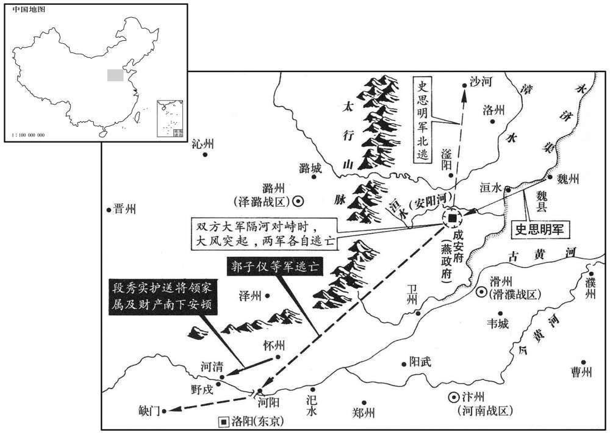
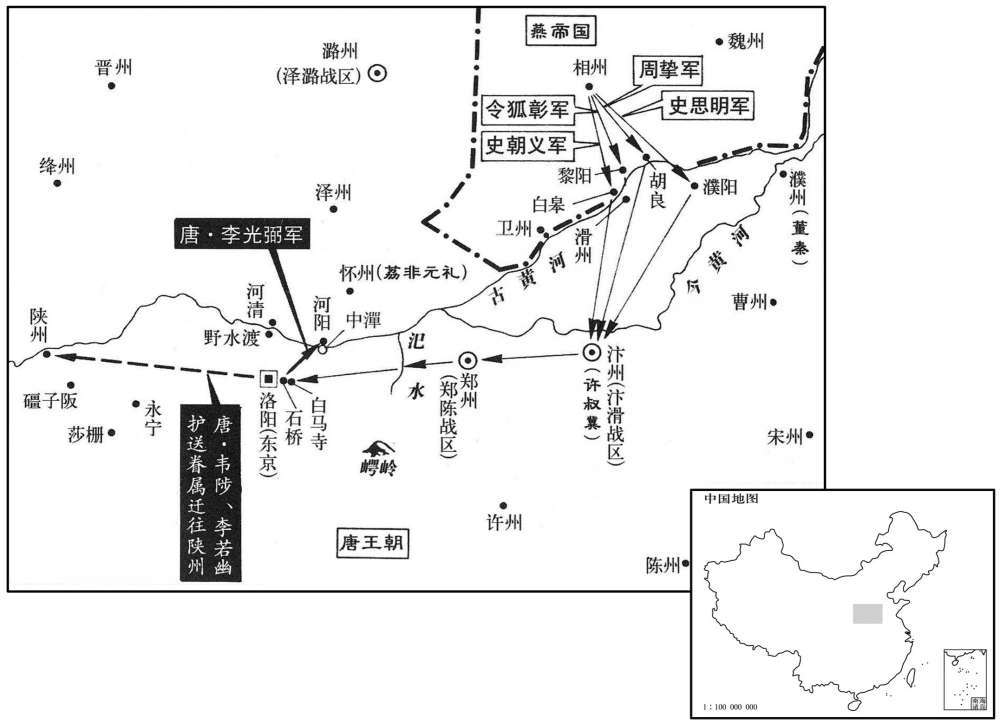
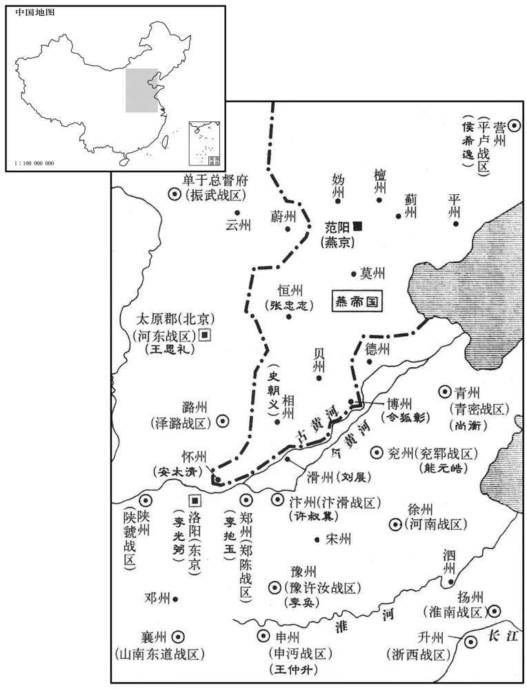
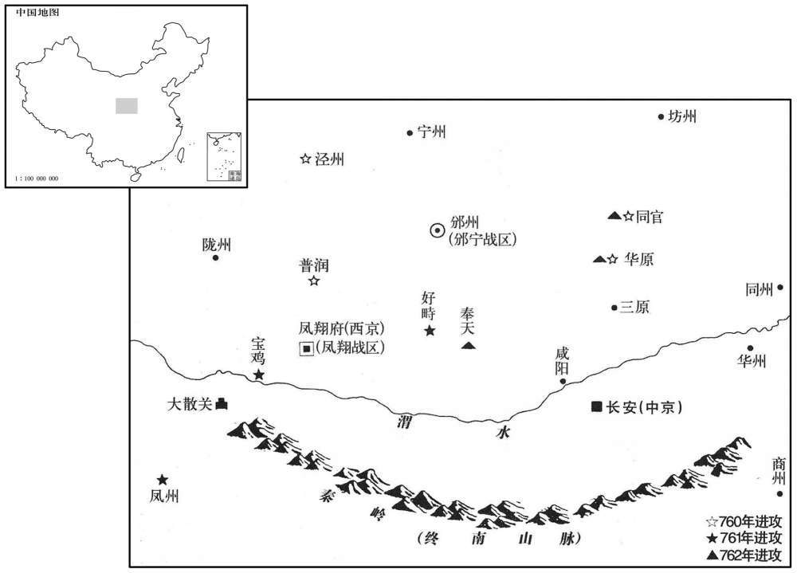
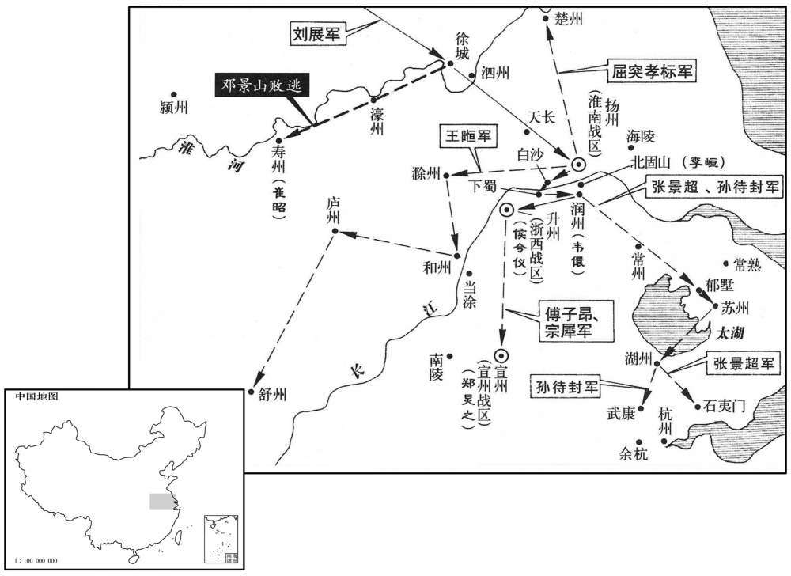

卷次与人物目录 / 卷221
资治通鉴 · 卷第二百二十一【唐纪三十七】
公元759年至公元760年 · 原文、白话与胡三省注
本页按胡注本编排保存全卷内容。白话采用本站所据译本，未可靠对应的内容另列说明；事件标题用于定位，并非原书文字。
本卷共108段原文，108段有译文对应，0段缺译或待核对。
卷第二百二十一【唐纪三十七】起屠维大渊献（己亥），尽上章困敦（庚子），凡二年。
卷首原文与注释
肃宗文明武德大圣大宣孝皇帝下之上
公元759年 · 唐肃宗文明武德大圣大宣孝皇帝干元二年
干元二年〔（己亥、七五九）〕
上传原文的注释括号有异常，字符原样保留；无法可靠划分的段落默认全文显示。
本年事件索引（现代整理）
- 史思明在魏州称燕王
- 肃宗依王玙之言祭祀九宫贵神
- 李嗣业攻邺城中箭身亡
- 李揆以月食劝阻加尊号
- 九节度使围邺城却因缺乏统帅而军心涣散
- 史思明扰乱唐军转运并迫使官军出战
- 唐军六十万在安阳河北被史思明击溃
- 郭子仪退守河阳
- 史思明诱杀安庆绪及其党羽
- 回纥将领脱离安庆绪奔赴长安
- 荔非元礼接掌镇西、北庭行营
- 吕諲、李岘等拜相
- 郭子仪任东畿等道元帅
- 王思礼击败杨旻于潞城
- 李辅国独揽诏令、禁兵及司法权
- 李岘力陈李辅国专权后整肃政务
- 唐廷设置陈郑亳等节度使
- 鲁炅因相州兵败而服药自尽
- 史思明称燕帝并改元顺天
- 李抱玉任郑陈颍亳节度使
- 回纥可汗死后宁国公主拒绝殉葬
- 李辅国操纵审案致李岘被贬
- 许叔冀任滑汴节度使
- 朔方分设邠宁等九州节度使
- 鱼朝恩谗毁郭子仪使其被召还
- 李光弼任兵马副元帅并整肃朔方军
- 李光弼斩杀迟到的张用济
- 仆固怀恩受礼安抚后归附李光弼
- 王思礼兼任太原尹及河东节度使
- 张光晟报恩救解辛云京之冤
- 仆固怀恩加官进爵
- 康楚元、张嘉延据襄州叛乱
- 宁国公主返回唐朝
- 曹日升奉命赴襄州招抚康楚元
- 李光弼任河北节度使
- 张嘉延攻陷荆州
- 绛州增铸乾元重宝重轮大钱
- 崔光远任荆襄招讨使
- 史思明遣诸将分路南下
- 许叔冀投降史思明，田神功随后归唐
- 安庆绪败逃后叛军残部多归史思明
- 耿仁智、乌承玼劝史思明归唐
- 史思明拘捕安守忠等人后率十三郡归降
- 史思明在河北大举招降州郡
- 玄宗受加尊号光天文武大圣孝感皇帝
- 郭子仪回东都筹划收复河北
- 李岘主张宽处陷贼官员，肃宗从议
- 肃宗请求上皇宽免张均、张垍
- 张万顷因保护百姓未被定罪
- 司马光论朝廷宽待失节官员
- 废妃韦氏卒
- 唐廷设置左右神武军
- 唐廷调整河中、剑南、荆澧等节度区划
- 玄宗授玉册并加尊号于肃宗
- 肃宗停止清查民间散失的宗庙器物财货
- 李辅国兼任太仆卿，权倾朝野
- 能元皓率北海部众归降唐朝
春，正月，己巳朔，史思明筑坛于魏州城北，自称大圣燕王；以周挚为行军司马。〔考异曰：河洛春秋作「周万至」，邠志作「周至」，旧传作「周贽」。今从实录。〕李光弼曰：「思明得魏州而按兵不进，此欲使我懈惰，而以精锐掩吾不备也。请与朔方军同逼魏城，求与之战，彼惩嘉山之败，〔嘉山之败，事见二百十八卷至德元载。〕必不敢轻出。得旷日引久，则邺城必拔矣。庆绪已死，彼则无辞以用其众也。」鱼朝恩以为不可，乃止。〔使用光弼之计，安有滏水之溃乎！朝，直遥翻。〕
春季，正月己巳朔（初一），史思明在魏州城北建筑祭坛，祭天称王，自称大圣燕王，任命周挚为行军司马。李光弼说：“史思明攻占魏州后，按兵不动，是想松懈我们的意志，然后用精兵突然袭击我们的不备。请让我与朔方军联兵进逼魏州城，向史思明挑战，史思明鉴于嘉山之败的经验，必定不敢轻易出战。这样旷日持久，我们就能够收复邺城。如果安庆绪败死，史思明就会失去号召力，难以指挥叛军。”而观军容使宦官鱼朝恩却认为此计不可行，只好作罢。
戊寅，上祀九宫贵神，〔李心传曰：九宫贵神者，太一、摄提、权主、招摇、天符、青龙、咸池、太阴、天一。宋白曰：九宫贵神，其说本之黄帝九宫经、萧吉五行大义。〕用王玙之言也。乙卯，耕藉田。〔「乙卯」，当作「乙酉」。〕
戊寅（初十），肃宗采用王的建议，祭祀九宫贵神。乙卯（疑误），肃宗行藉田礼，亲自耕田，以示重农。
镇西节度使李嗣业攻邺城，为流矢所中，〔中，竹仲翻。〕丙申，薨；兵马使荔非元礼代将其众。〔将，即亮翻。〕初，嗣业表段秀实为怀州长史，知留后事。〔李嗣业以镇西、北庭兵屯怀州，会师攻邺，以段秀实知留后事。〕时诸军屯戍日久，财竭粮尽，秀实独运刍粟，募兵市马以奉镇西行营，相继于道。
镇西节度使李嗣业在攻打邺城时，被乱箭射中，丙申（二十八日）去世。兵马使荔非元礼代替他指挥军队。起初，李嗣业奏请任命段秀实为怀州长史，主管留后事宜。此时，各路军队因为屯兵于邺城之下日久，财竭粮尽，而只有段秀实运送粮草，招兵买马，用以供应镇西行营兵，道路上络绎不绝。
二月，壬子，月食，既。〔春秋之法：书日食，不书月食。日，君象也。此因张后之专横而书月食。记曰：男教不修，阳事不得，谪见于天，日为之食；妇顺不修，阴事不得，谪见于天，月为之食。是故日食，则天子素服而修六官之职，荡天下之阳事；月食，则后素服而修六宫之职，荡天下之阴事。故天子之与后，犹日之与月，阴之与阳，相须而成者也。是后月食皆书于目录上方。〕先是百官请加皇后尊号曰「辅圣」，〔先，悉荐翻。考异曰：旧纪作「翊圣」，今从实录。〕上以问中书舍人李揆，对曰：「自古皇后无尊号，惟韦后有之，〔韦后事见二百八卷中宗景龙元年。〕岂足为法！」上惊曰：「庸人几误我！」会月食，事遂寝。后与李辅国相表里，横于禁中，〔几，居依翻。横，户孟翻。〕干豫政事，请托无穷，上颇不悦，而无如之何。
二月壬子（十五日），出现月全食。此前，百官请求加封张皇后尊号为“辅圣”，肃宗因此事问中书舍人李揆，李揆回答说：“自古以来皇后都没有尊号，只有中宗时韦皇后曾经有过尊号，怎么能够效法呢！”肃宗吃惊地说：“这些庸人几乎误了我的大事！”适逢出现月食，于是此事搁置。后来张皇后与宦官李辅国相互勾结，横行朝中，干预政事，无究尽地请托。肃宗虽然心中不满，但也无可奈何。
郭子仪等九节度使围邺城，筑垒再重，穿堑三重，〔重，直龙翻。〕壅漳水灌之。城中井泉皆溢，构栈而居，自冬涉春，安庆绪坚守以待史思明，食尽，一鼠直钱四千，淘墙佲及马矢以食马。〔佲，与职翻。先以麦佲杂土筑墙，今围急乏刍，故淘佲以饲马。食，祥吏翻。〕人皆以为克在朝夕，而诸军既无统帅，〔帅，所类翻。〕进退无所禀；〔禀，禀令也。禀，必锦翻。行军进退，必禀令于主帅，今诸军无所禀也。〕城中人欲降者，碍水深，不得出。〔降，户江翻。〕城久不下，上下解体。〔师老势屈，故解体。〕
郭子仪等九节度使包围了邺城，筑垒两道，挖壕三重，堵塞漳河水灌城。邺城中井泉都水满溢出，人们只好构栈而住，从冬天一直到春天，安庆绪死死坚守，等待史思明率兵解围，城中粮食吃尽，以至一只老鼠值钱四千，士卒挖出墙中的麦秸及马粪来喂养战马。人们都认为邺城危在旦夕，必能攻克，但是官军的各路军队因为没有统帅，进退没有统一指挥，城中的人想要投降，但因为水深不得出城。这样邺城久攻不下，官军疲困解体，没有士气。
思明乃自魏州引兵趣邺，〔果如李光弼之言。趋，七喻翻。〕使诸将去城各五十里为营，每营击鼓三百面，遥胁之。又每营选精骑五百，日于城下抄掠，〔骑，奇寄翻。抄，楚交翻。〕官军出，辄散归其营；诸军人马牛车日有所失，樵采甚艰，昼备之则夜至，夜备之则昼至。时天下饥馑，转饷者南自江、淮，西自并、汾，舟车相继。思明多遣壮士窃官军装号，督趣运者，〔趣，读曰促。〕责其稽缓，妄杀戮人，运者骇惧；舟车所聚，则则密縰火焚之；往复聚散，自相辨识，而官军逻捕不能察也。〔逻，郎佐翻。〕由是诸军乏食，人思自溃。思明乃引大军直抵城下，〔观史思明用兵，所谓盗亦有道焉。〕官军与之刻日决战。
这时，史思明才率兵从魏州进军邺城，命令诸将在距离邺城五十里处扎营，每个营中击鼓三百面，遥为安庆绪声缓，威胁官军。史思明又从每个营中挑选精锐骑兵五百，每天到城下抢掠，官军如果出来交战，他们就散归自己的军营中。这样官军各路的人马牛车每天都有丧失，甚至连采集薪柴都很艰难。官军白天防备，叛军骑兵就在夜里来骚扰，如果夜里防备，叛军就白天来。当时天下饥荒，军中所用粮饷都是南从江、淮地区，西自并州、汾州运来，船车相继不断。于是史思明派壮士穿上官军的服装，窃取官军的号令，去督促运粮者，斥责他们缓慢，随便杀戮，使转运的人心中惊骇恐惧。他们又在运送粮饷船车聚集的地方，暗中放火焚烧。神出鬼没，聚散无常，他们自己能够相识别，但巡逻的官军士卒却抓不到，也侦察不出行迹。因此官军各路军队都缺乏粮食，人心涣散。史思明这才率领大军直抵城下，与官军定好了决战的日期。
三月，壬申，官军步骑六十万陈于安阳河北，〔陈，读曰阵；下布陈同。滏水径安阳县而东流，谓之安阳河。〕思明自将精兵五万敌之，〔将，即亮翻。〕诸军望之，以为游军，未介意。思明直前奋击，李光弼、王思礼、许叔冀、鲁炅先与之战，杀伤相半；鲁炅中流矢。〔中，竹仲翻。〕郭子仪承其后，未及布陈，大风忽起，吹沙拔木，天地昼晦，咫尺不相辨，两军大惊，官军溃而南，贼溃而北，弃甲仗辎重委积于路。〔史言滏水之战，天未悔祸，非战之罪。使皆如李光弼、王思礼，在乱能整，则其失亡，不至于其。重，直用翻。〕子仪以朔方军断河阳桥保东京。〔断，音短。〕战马万匹，惟存三千；甲仗十万，遗弃殆尽。东京士民惊骇，散奔山谷；留守崔圆、河南尹苏震等官吏南奔襄、邓；〔守，式又翻。襄、邓二州，属山南东道。〕诸节度各溃归本镇。士卒所过剽掠，〔剽，匹妙翻。〕吏不能止，旬日方定。惟李光弼、王思礼整勒部伍，全军以归。〔考异曰：邠志曰：「史思明自称燕王。牙前兵马使吴思礼曰：『思明果反。盖蕃将也，安肯尽节于国家！』因目左武锋使仆固怀恩。怀恩色变，阴恨之。三月六日，史思明轻兵抵相州，郭公率诸军御之，战于万金驿。贼分马军并滏而西，郭公使仆固怀恩以蕃、浑马军邀击，破之。还遇吴思礼于阵，射杀之，呼曰：『吴思礼阵没。』其夕，收军，郭公疑怀恩为变，逐脱身先去。诸军相继溃于城下。」今从实录。〕
三月壬申（初六），官军步、骑兵六十万在安阳河北岸开摆阵势，史思明亲自率领精兵五万来交战，官军望见，以为是流动部队，不加介意。史思明身先士卒，率军冲锋，李光弼、王思礼、许叔冀与鲁炅先领兵迎战，杀伤各半，鲁炅还被乱箭射中。郭子仪率兵紧跟在后面，还未及布阵，大风急起，吹沙拔木，天地一片昏暗，咫尺之间，人马不辨，两军都大吃一惊，接着官军向南溃退，叛军向北溃退，所丢弃的武器盔甲等军用物资满路都是。郭子仪命令朔方军切断了河阳桥，以确保东京的安全。一万匹战马仅剩下三千，十万盔甲兵器差不多全部丧失。东京城中的官吏民众十分惊恐，都纷纷逃向山中，留守崔圆与河南尹苏震等官吏向南逃奔襄州、邓州，各路节度使也率领自己的兵马逃回本镇。这些败兵沿路大肆抢掠，胡作非为，当地官吏和军中将帅无法制止，十多天才安定下来。只有李光弼与王思礼整理队伍，全军返回。

子仪至河阳，将谋城守，师人相惊，又奔缺门。〔水经注：谷水出弘农渑池县南，又东径新安县故城南，又东径千秋亭南，又东径缺门山，山阜之不接者里余，故得是名。〕诸将继至，众及数万，议捐东京，退保蒲陕。〔将，即亮翻。捐，于专翻。陕，矢冉翻。蒲、陕二州夹河，潼关控其险，可以御敌，故议退保之。〕都虞候张用济曰：「蒲、陕荐饥，不如守河阳，贼至，并力拒之。」子仪从之。使都游奕使灵武韩游緕将五百骑前趣河阳，〔使，疏吏翻。緕，古回翻。骑，奇寄翻。趣，七喻翻。〕用济以步卒五千继之。周挚引兵争河阳，后至，不得入而去。用济役所部兵筑南、北两城而守之。〔是后李光弼虽斩张用济而守河阳，则实张用济定计于其先也。〕段秀实帅将士妻子及公辎重自野戍渡河，待命于河清之南岸，〔野戍，即水渡，置戍守之，因谓之野戍。河清县，本属河南尹，本大基县，武德二年置，八年省，咸亨四年复分河南洛阳、新安、王屋、济源、河阳置大基，先天元年更名河清。帅，读曰率。将，即亮翻。辎，庄持翻。重，直用翻。〕荔非元礼至而军焉。诸将各上表谢罪，〔上，时掌翻〕。上皆不问，惟削崔圆阶封，〔崔圆先封赵国公，实封户五百。国公，从一品，阶比开府仪同三司。〕贬苏震为济王府长史，削银青阶。〔济王环，上弟也。济，子礼翻。长，知两翻。〕
郭子仪到达河阳，想要坚守河阳城，因为部队自相惊扰，又逃奔缺门。这时部将都陆续赶到，点检人马，才有几万，大家商议放弃东京，退保蒲州、陕州。都虞侯张用济说：“蒲州与陕州连年饥荒，不如坚守河阳，叛军如果来攻，就全力坚守。”郭子仪同意。于是就派都游弈使灵武人韩游率领五百骑兵先进军河阳，张用济率领五千步兵继后。叛军的行军司马周挚领兵来争夺河阳，因为晚到一步，无法入城而退去。张用济让士兵筑南、北两城准备坚守。段秀实率领镇西将士的家眷以及公私物资从野戌渡过黄河，在河清县南面待命，荔非元礼到后遂驻军于此。各路将帅都上表谢罪，肃宗都不责问，只是削夺了崔圆的封爵与官阶，并贬苏震为济王府长史，削夺银青光禄大夫官阶。
史思明审知佑官军溃去，自沙河收整士众，还屯邺城南。〔史思明之兵溃而北去，至沙河，知官军的去，乃收整其众而南。使官军于滏水惊溃之后，各能收兵还营，坚壁而围守邺城，思明未敢南也。沙河县，隋分龙冈县置，唐属邢州，在邺城西北二百余里。还，音旋，又音如字。〕安庆绪收子仪营中粮，得六七万石，与孙孝哲、崔干佑谋闭门更拒思明。诸将曰：「今日岂可复背史王乎！」〔复，扶又翻。背，蒲妹翻。〕思明不与庆绪相闻，又不南追官军，但日于军中飨士。张通儒、高尚等言于庆绪曰：「史王远来，臣等皆应迎谢。」〔应，乙陵翻。〕庆绪曰：「任公蹔往。」思明见之涕泣，厚礼而归之。经三日，庆绪不至。思明密召安太清令诱之，〔蹔，与暂同。令，力丁翻。诱，音酉。〕庆绪窘蹙，不知所为，乃遣太清上表称臣于思明，请待解甲入城，奉上玺绶。〔窘，巨陨翻。上，时掌翻。玺，斯氏翻。绶，音受。〕思明省表，曰：「何至如此！」因出表徧示将士，咸称万岁。〔省，昔景翻。思明出庆绪表徧示将士，以观其情向背。〕乃手疏唁庆绪〔疏，所据翻。唁，鱼战翻，吊生曰唁。〕而不称臣，且曰：「愿为兄弟之国，更作藩篱之援。鼎足而立，犹或庶几；北面之礼，固不敢受。」并封表还之。庆绪大悦，因请歃血同盟，思明许之。庆绪以三百骑诣思明营，思明令军士擐甲执兵以待之，〔几，居希翻。歃，色甲翻。骑，奇寄翻。擐，音宦。〕引庆绪及诸弟入至庭下。庆绪再拜稽首曰：「臣不克荷负，〔稽，音启。荷，下可翻，又如字。」弃失两都，久陷重围，〔重，直龙翻。〕不意大王以太上皇之故，〔庆绪尊禄山为太上皇，见二百十九卷至德元载。〕远垂救援，使臣应死复生，〔复，扶又翻，又如字。〕摩顶至踵，无以报德。」思明忽震怒曰：「弃失两都，亦何足言。尔为人子，杀父夺其位，天地所不容。吾为太上皇讨贼，〔吾为，音于伪翻。〕岂受尔佞媚乎！」即命士右牵出，并其四弟及高尚、孙孝哲、崔干恉佑皆杀之；张通儒、李庭望等悉授以官。思明勒兵八入邺城，收其士马，以府库赏将士，庆绪先所有州、县及兵皆归于思明。遣安太清将兵五千取怀州，因留镇之。思明欲逐西略，虑根本未固，乃留其子朝义守相州，〔朝，直遥翻。〕引兵衰范阳。
史思明得知官军败退，就从沙河整顿兵马，还军邺城南面。安庆绪收集了郭子仪军队败退时留在营中的粮食，有六七万石，于是就与孙孝哲、崔乾等计谋闭城门抗拒史思明。这时各位将领说：“我们现在怎么能够背叛史王呢！”而史思明既不与安庆绪通报情况，也不南下追击官军，只是每天在军中宴请士卒。张通儒、高尚等人对安庆绪说：“史王远道率兵来救援我们，我们都应该去迎接感谢。”安庆绪说：“随你们去吧。”史思明见到张通儒、高尚等，痛哭流涕，重加礼赏，然后让他们回去。过了三天，安庆绪还不来。于是史思明就暗中把安太清召来，让他诱骗安庆绪，安庆绪无计可施，不知道怎么办才好，只好派安太清向史思明上表称臣，并说等待史思明安顿好部队入城后，就奉上皇帝印玺。史思明看了表书后说：“你何必要这样呢！”并把表书拿出来让将士们看，将士们都呼喊万岁。因此史思明就亲手写信安慰安庆绪，并不称臣，只是说：“愿与你作为兄弟邻国，互相援助。我们之间地位平等，鼎足而立，这还差不多；如果向我称臣，万不敢接受。”并把表书封缄后还给安庆绪。安庆绪十分高兴，因此请求与史思明歃血结盟，史思明同意。于是安庆绪带领三百名骑兵来到史思明军营中，史思明命令士卒全副武装以防备安庆绪，然后引安庆绪与他的几个弟弟进入庭中。安庆绪叩头再拜说：“作为臣下我治军无方，丧失东西二京，并陷于重兵包围之中，没有想到大王看在我父亲太上皇的情份上，远来救危，使我得以复生，恩深如海，终生难以报答。”史思明忽然大怒说：“丢失两京，何足挂齿。你身为人子，杀父篡位，为天地之所不容。我是为太上皇讨伐你这个逆贼，怎么肯受你讨好的假话欺骗呢！”当即命令左右的人把安庆绪连同他的四个弟弟以及高尚、孙孝哲、崔乾等全部杀掉。张通儒、李庭望等人都被授以官职。然后史思明整军入邺城，收集了安庆绪的兵马，把府库中的财物分赏给将士，安庆绪原先所占据的州、县以及兵马都归史思明所有。史思明又派安太清率兵五千攻取怀州，因此留安太清镇守怀州。史思明想立刻率兵向西发展，考虑到后方还不稳固，于是就把他的儿子史朝义留下镇守相州，自己率兵返回范阳。
甲申，回纥骨啜特勒、帝德等十五人自相州奔衰西京，上宴之于紫宸殿，〔宋敏求长安志：宣政殿北曰紫宸，门内有紫宸殿，即内衙之正殿。〕赏赐有差。庚寅，骨啜特勒等辞还行营。
甲申（十八日），回纥将领骨啜特勒、帝德等十五人从相州逃回西京，肃宗于紫宸殿宴请他们，并赏赐给他们数量不等的财物。庚寅（二十四日），骨啜特勒等辞别，返回行营。
辛卯，以荔非元礼为怀州刺史，权知镇西、北庭行营节度使。元礼复以段秀实为节度判官〔复，扶又翻。〕
辛卯（二十五日），肃宗任命荔非元礼为怀州刺史，代理镇西、北庭行营节度使。荔非元礼又任命段秀实为节度判官。
甲午，以兵部侍郎吕諲同平章事。乙未，以中书侍郎、同平章事苗晋卿为太子太傅，王玙为刑部尚书，皆罢政事。以京兆尹李岘行吏部尚书，中书舍人兼礼部侍郎李揆为中书侍郎，及户部侍郎第五琦并同平章事。上于岘恩意尤厚，岘亦以经济为己任，军国大事多独决于岘。〔为李辅国忌岘，不得久于相位张本。〕于是京师多盗，李辅国请选羽林骑士五百以备巡逻。〔罗，郎佐翻。〕李揆上疏曰：「昔西汉以南北军相制，故周勃因南军入北军，遂安刘氏。〔周勃安刘，事见汉高后纪。李揆谓勃因南军入北军，考其本末，恐不如此。〕皇朝置南、北牙，文武区分，以相伺察。今以羽林代金吾警夜，忽有非常之变将何以制之！」乃止。〔金吾卫，属南牙；羽林卫，属北牙。金吾掌巡徼，李辅国欲以羽林军夺其职，故李揆以为言。朝，直遥翻。〕
甲午（二十八日），肃宗任命兵部侍郎吕同平章事。乙未（二十九日），任命中书侍郎、同平章事苗晋卿为太子太傅，王为刑部尚书，都免去他们的政事。又任命京兆尹李岘为吏部尚书，中书舍人兼礼部侍郎李揆为中书侍郎，以及户部侍郎第五琦并同平章事。肃宗特别赏识李岘，李岘也以经国治邦为己任，所以军国大事大多由李岘一人处理。当时京城盗贼横行，宦官李辅国请求挑选羽林军的五百骑兵以备巡逻搜捕。李揆上疏说：“过去西汉王朝设置南北二军互相制约，所以周勃得以率南军进入北军，于是安定了刘氏王朝。我们大唐王朝设置南牙与北牙，文臣与武将相区别，以使他们互相监督。现在用羽林军代替金吾卫巡夜，如果发生了突发事件，怎么控制局势呢！”此事只好作罢。
丙申，以郭子仪为东畿、山东、河东诸道元帅，权知东京留守。〔东畿，谓东京畿。山东，谓河南、河北。河东，自蒲、绛北至并、代。〕以河西节度使来瑱行陕、虢、华州节度使。〔来瑱徙河西，未行，而相州师溃，因使之镇陕以守关。然瑱寻徙襄阳。华，户化翻。〕
丙申（三十日），肃宗任命郭子仪为东畿、山东、河东诸道元帅，暂代东京留守。又任命河西节度使来为陕州刺史，并兼任陕州、虢州、华州节度使。
夏，四月，庚子，泽潞节度使王思礼破史思明将杨旻于潞城东。〔潞城县，属潞州，隋开皇十六年置，春秋潞子所邑也。九域志：潞城，在潞州东北四十里。〕
夏季，四月庚子（初四），泽潞节度使王思礼于潞城东面击败史思明将领杨。
太子詹事李辅国，自上在灵武，判元帅行军司马事，侍直帷幄，宣传诏命，四方文奏，宝印符契，晨夕军号，一以委之。及还京师，专掌禁兵，常居内宅，〔内宅，盖在禁中，辅国止宿之署舍也。〕制敕必经辅国押署，然后施行，宰相百司非时奏事，皆因辅国关白、承旨。常于银台门决天下事，〔雍录：按六典大明宫图，有左、右银台门。左银台门直紫宸殿之东，右银台门直紫宸殿之西。又考阁本大明宫图，右银台门内即翰林院、麟德殿，又东历内侍别省、延英殿、光顺门而后至紫宸殿。自左银台门西入，历温室、浴堂殿、绫绮殿而后至紫宸殿。紫宸殿在宣政殿后，当大明宫正中。右银台门在宫城西面，左银台门在宫城东面，以地望准之，正直紫宸东、西耳。〕事无大小，辅国口为制敕，写付外施行，事毕闻奏。又置察事数十人，潜令于人间听察细事，即行推按；有所追索，诸司无敢拒者。御史台、大理寺重囚，或推断未毕，辅国追诣银台，一时纵之。〔索，山客翻。断，丁乱翻。〕三司、府、县鞫狱，皆先诣辅国咨禀，轻重随意，称制敕行之，莫敢违者。宦官不敢斥其官，皆谓之五郎。李揆山东甲族，见辅国执子弟礼，谓之五父。〔李揆裔出陇西，其先客居荥阳，遂为山东甲族。李辅国，第五。〕
太子詹事宦官李辅国，自肃宗在灵武时，就任元帅府行军司马，侍奉在肃宗左右，宣布诏敕诰命，肃宗把四方来的文书奏疏，军中的印玺符契以及军队的号令集训等事，全都委任于他。到收复京师后，李辅国又专门掌管禁军，常常住在宫中的署舍里，肃宗所颁下的制敕，必须经过李辅国画押签署，然后才能施行，宰相以及百官有急事上奏时，都在通过李辅国禀告和受旨。李辅国经常在银台门处理国家的政事，不管大小事，都由李辅国口宣制敕，写好后交给外面去执行，等事情完结后才上奏给肃宗。李辅国又设置察事数十人，暗中让他们打听民间的秘密事情，然后再进行审讯。如果要追查什么案子，朝廷各部门都不敢加以拒绝。关在御史台与理寺内的重刑犯人，有的还没有审讯完毕，李辅国就追到银台门，一下子把这些人全部放掉。御史台、中书省、门下省三司以及府、县审理案件，都要先报告李辅国，听候他的指示，随他的意思而判，声称是皇上的制敕，命令实行，没有人敢于违抗。宦官不能直呼李辅国的官名，都称他五郎。李揆是崤山以东地区的名门大族，见了李辅国还要行子弟礼，称他为五父。
及李岘为相，于上前叩头，论敕皆应由中书出，具陈辅国专权乱政之状，上感寤，赏其正直；〔岘，户典翻。相，息亮翻。〕辅国行事，多所变更，〔更，工衡翻。〕罢其察事。辅国由是让行军司马，请归本官，〔本官，太子詹事。〕上不许。〔【章：甲十六行本「许」下有「壬寅」二字；乙十一行本同；张校同，云无注本亦无。】〕制：「比缘军国务殷，或宣口敕处分。〔比，毗至翻。处，昌吕翻。分，扶问翻。〕诸色取索及杖配囚徒，自今一切并停。如非正宣，并不得行。〔索，山客翻。正宣，宣命。凡出宣命，有底在中书，可以检覆，谓之正宣。〕中外诸务，各归有司。英武军虞候及六军诸使、诸司等，比来或因论竞，悬自追摄，〔英武军，殿前射生手也，置虞候以统之。六军，北门六军也。诸使，内诸使也。诸司，内诸司也。使，疏吏翻。论，卢毘翻。〕自今须一切经台、府。〔台，御史台。府，京兆府。〕如所由处断不平，〔处，昌吕翻。断，丁乱翻。〕听具状奏闻。诸律令除十恶、杀人、奸、盗、造伪外，余烦冗一切删除，仍委中书、门下与法官详定闻奏。」辅国由是忌岘。〔考异曰：实录李岘传曰：「时李辅国专典禁中兵权，诏旨或不由中书而出，岘切陈其状，肃宗甚嘉之，即日下诏，如岘奏。由是挫辅国威权，辅国颇忌之。」盖即此诏也。〕
李岘做宰相以后，在肃宗面前叩头，论说皇上的制敕都应该由中书省出，并陈述了李辅国专权乱政的事例，肃宗因此醒悟，称赞李岘为人正直，李辅国做事也多所改变，罢掉了那些察事。李辅国因此又辞让元帅府行军司马一职，请求回归本官为太子詹事，肃宗不答应。肃宗下制说：“近来因为军国大事繁忙，有时让人宣布口敕处理政事。从今以后，各种索取以及棍打发配囚犯之事，全部停止。如果不是由中书省所宣布的敕命，都不能施行。朝野内外的一切事务，各归主管部门办理。英武军的虞侯及禁军六军的各使、各司，近来有时为了竞争，就各自追踪犯人，从今以后，一切案件都要经过御史台与京兆府处理，如果台、府官员处理判决不公平，允许写状上奏。各种刑律除了十恶、杀人、奸、盗、伪造罪外，其余的过烦过多的条款，全部删除。并委托中书省、门下省与法官详细确定以后再上奏告知。”李辅国因此忌恨李岘。
甲辰，置陈、郑、亳节度使，以邓州刺史鲁炅为之；以徐州刺史尚衡为青、密七州节度使；〔七州，青、密、登、莱、淄、沂、海。炅，古迥翻。〕以兴平军节度使李奂兼豫、许、汝三州节度使；仍各于境上守捉防御。〔陈、郑、亳前此未尝置节镇，鲁炅自南阳为之。青、密等七州，尚衡自彭城升统之。兴平军本置于雍州始平县，李奂时在行营，统豫、许、汝三州。此皆临时分镇，非有一定规模也。〕
甲辰（初八），唐朝设置陈州、郑州、亳州节度使，任命邓州刺史鲁炅为节度使，任命徐州刺史尚衡为青州、密州等七州节度使，兴平军节度使李奂兼任豫州、许州、汝州三州节度使。各节度使仍在自己的境内行使防御使与守捉使的职权。
九节度之溃于相州也，鲁炅所部兵剽掠尤甚，〔剽，匹妙翻。〕闻郭子仪退屯河上，李光弼衰太原，炅惭惧，饮药而死。〔衰，从宣翻，又音如字。〕
九节度使兵败相州以后，鲁炅部下的士卒抢掠尤其厉害，得知郭子仪兵退到黄河岸边，李光弼回军太原，鲁炅惭愧害怕，饮毒药而死。
史思明自称大燕皇帝，改元顺天，〔燕，因肩翻。考作「应天皇帝」，注曰：河洛春秋曰：「上元三年春三月，思明怀西侵之谋，虑北地之变，乃令男朝义留守相城，自颂士马归范阳，因僭号后燕，改元顺天元年。」晏实录，此年正月一日，思明称燕王，立年号。实录、旧传皆不载所改年名。纪年通谱，此年即思明顺天元年。柳璨正闰位历，思明有顺天、应天二号。按蓟门纪乱：「思明既杀乌承恩，不称国家正朔，亦不受庆绪指麾，境内但称某月已。干元二年四月癸酉，思明僭位于范阳，建元顺天，国号大燕，立妻辛氏为皇后，次子朝兴为皇太子，长子朝义为怀王。六月，于开元寺造塔，改寺名为顺天。上元二年正月癸卯，思明大赦，改元应天。」实录云：「正月，立年号。」河洛春秋云：「上元三年僭号。」蓟门纪乱云：「立朝兴为太子。」按思明欲立少子为太子，左右泄其谋故朝义弒之。纪乱云于时已立为太子，误也。按长历，四月丁酉朔，无癸酉。〕立其妻辛氏为皇后，子朝义为怀王，以周挚为相，李归仁为将，〔朝，直遥翻。相，息亮翻。将，即亮翻。〕改范阳为燕京，诸州为郡。
史思明自称大燕皇帝，改年号为顺天，立妻子辛氏为皇后，儿子史朝义为怀王，任命周挚为宰相，李归仁为大将，改范阳为燕京，各州改称为郡。
戊申，以鸿胪卿李抱玉为郑、陈、颖、亳节度使。〔胪，凌如翻。使，疏吏翻。〕抱玉，安兴贵之后也，〔安兴贵，见一百八十七卷高祖武德二年。〕为李光弼裨将，屡有战功；自陈耻与安禄山同姓，故赐姓李氏。
戊申（十二日），肃宗任命鸿胪卿李抱玉为郑州、陈州、颍州、亳州节度使。李抱玉是安兴贵的后代，李光弼部下裨将，多次立有战功，自己奏陈耻与安禄山同姓，所以被赐姓李氏。
回纥毗伽阙可汗卒，长子叶护先遇杀，国人立其少子，是为登里可汗。〔纥，下没翻。伽，求迦翻。长，知两翻。少，始照翻。可，从刊入声。汗，音寒。卒，子恤翻。〕回纥欲以宁国公主为殉。公主曰：「回纥慕中国之俗，故娶中国女为妇。若欲从其本俗，何必结婚万里之外邪！」〔邪，音耶。〕然亦为之剺面而哭。〔漠北之俗，死者停尸于帐，子孙及亲属男女各杀牛马，陈于帐前祭之，遶帐走马七匝，诣帐门，以刀剺面，且哭，血泪俱流，如此者七度，乃止。为，于伪翻。剺，里之翻。〕
回纥毗伽阙可汗去世，因为他的长子叶护已遇刺身亡，所以国人立他的小儿子为可汗，这就是登里可汗。回纥想要让宁国公主为毗伽阙可汗殉葬，公主说：“回纥因为羡慕中国的风俗，所以才娶中国女子为妻。如果想遵从你们本来的风俗，何必要同万里之外的中国女人结婚呢！”但公主还是按照回纥的风俗习惯，为回纥可汗割破面颊，流血哭泣。
凤翔马坊押官为劫，〔押官者，管押马坊之官。〕天兴尉谢夷甫捕杀之。〔天兴县，本古雍县，至德二载，改曰凤翔，仍分置天兴县，带凤翔府。〕其妻讼冤。李辅国素出飞龙厩，〔李辅国本飞龙小儿。〕敕监察御史孙蓥鞫之，无冤。〔监，古衔翻。蓥，余倾翻，又乌定翻。又使御史中丞崔伯阳、刑部侍郎李晔、大理卿权献鞫之，〔此唐制所谓小三司也。〕与蓥同。犹〔【章：甲十六行本「犹」上有「妻」字；乙十一行本同；张校同；退斋校同。】〕不服。又使侍御史太平毛若虚鞫之，〔太平县，属绛州，魏太武帝置泰平县，周改为太平，因太平关城为名。〕若虚倾巧士，希辅国意，归罪夷甫。伯阳怒，召若虚诘责，欲劾奏之。〔诘，去吉翻。劾，户概翻，又户得翻。〕若虚先自归于上，上匿若虚于帘下。伯阳寻至，言若虚附会中人，鞫狱不直。上怒，叱出之。伯阳贬高要尉，献贬桂阳尉，〔桂阳，渶县，隋、唐带连州。〕晔与凤翔尹严向皆贬岭下尉，〔岭下，谓度岭南下诸县，史失晔、向所贬县名，故云皆贬岭下尉。〕蓥除名，长流播州。吏部尚书、同平章事李岘奏伯阳无罪，责之太重，上以为朋党，五月，辛巳，贬岘蜀州刺史。〔尚，辰羊翻。岘，户典翻。考异曰：代宗实录云：「属有盗发凤翔、管在北军者，诏遣御史讯鞫，盗已伏罪。李辅国执奏重复。殿中侍御史毛若虚奏覆与辅国协。肃宗大怒，下三司推鞫之。岘以若虚不直，陈于上前。及三司覆奏，与岘理协，肃宗以为朋党。会同列李揆希旨，遂贬岘为通州刺史，三司大臣皆贬官。」今从肃宗实录、旧纪、传。〕右散骑常侍韩择木入对，〔散，悉亶翻。骑，奇寄翻。〕上谓之曰：「李岘欲专权，今贬蜀州，朕自觉用法太宽。」对曰：「李岘言直，非专权。陛下宽之，祗益圣德耳。」若虚寻除御史中丞，威振朝廷。〔朝，直遥翻。〕
凤翔管马坊的押官因为抢劫，被天兴县尉谢夷甫抓住杀掉。押官的妻子为他的丈夫诉冤。李辅国原本是飞龙马厩养马小儿出身，于是就命令监察御史孙蓥审问，结果不是冤案。李辅国又让御史中丞崔伯阳、刑部侍郎李晔、大理卿权献审问，结果与孙蓥相同。押官的妻子还不服，李辅国就又让侍御史太平人毛若虚审问，毛若虚本是小人，按照李辅国的意图，归罪于谢夷甫。崔伯阳十分愤怒，就把毛若虚叫来质问他，想上奏弹劾他。毛若虚自己先跑到肃宗那里，肃宗把毛若虚藏在帘子后面。不久崔伯阳来到，说毛若虚依附宦官，审理案件不公平。肃宗听后十分愤怒，就把崔伯阳喝斥出去。于是贬崔伯阳为高要县尉，大理卿权献为桂阳县尉，刑部侍郎李晔与凤翔尹严向也都被贬到岭南做县尉。监察御史孙蓥被削除名籍，流放到播州。吏部尚书、同平章事李岘上奏，说崔伯阳无罪，处理太重而，肃宗认为李岘与崔伯阳等人结党，五月辛巳（十六日），贬李岘为蜀州刺史。右散骑常侍韩择木入朝应对，肃宗对他说：“李岘想要专权，现在已被贬为蜀州刺史，朕还觉得用法太宽大。”韩择木回答说：“李岘直言不讳，并不是专权。陛下如果能够宽大地处理，只能够增加陛下的圣德。”不久，毛若虚被任命为御史中丞，威震朝廷。
壬午，以滑、濮节度使许叔冀为汴州刺史，充滑、汴等七州节度使；〔新书方镇表：汴、滑节度使治滑州，领州五：滑、濮、汴、曹、宋。〕以试汝州刺史刘展为滑州刺史，充副使。
壬午（十七日），肃宗任命滑、濮节度使许叔冀为汴州刺史，兼滑、汴等七州节度使；又任命试汝州刺史刘展为滑州刺史，兼节度副使。
六月，丁巳，分朔方置邠、宁等九州岛节度使。〔方镇表：开元九年置朔方节度使，领单于大都护府，夏、盐、绥、银、丰、胜六州，定远、丰安二军，三受降城。十年，增领鲁、丽、契三州。二十二年，兼关内道采访处置使，增泾、原、宁、庆、陇、鄜、坊、丹、延、会、宥、麟十二州。以匡、长二州隶庆州，安乐、长乐二州隶原州。天宝元年，增领邠州。干元元年，分镇北大都护府，麟、胜二州，置振武节度使。是年，废关内节度使，罢领单于大都护，以泾、原、宁、庆、坊、鄜、䦉、延隶邠宁节度。邠州本豳州，开元十三年以「豳」字类「幽」，改曰邠。〕
六月丁巳（二十三日），朝廷在朔方节度下分设州、宁州等九州节度使。
观军容使鱼朝恩恶郭子仪，〔恶，乌路翻。〕因其败，短之于上。秋，七月，上召子仪还京师，以李光弼代为朔方节度使、兵马元帅。〔考异曰：邠志曰：「四月，肃宗使丞相公镐东都，慰勉诸军。郭公陈鐉于军，张公不坐而去。军中不悦，朋肆流议。居十日，有中使追郭公。」汾阳家传曰：「六月，公朝于京师，三让元帅，上许之。乃诏李光弼代公为副。」段公别传曰：「五月，李光弼代子仪为副元帅，守东都。」今因实录七月除赵王系为元帅，并言之。〕士卒涕泣，遮中使请留子仪绐之日：「我饯中使耳，未行也。」因跃马而去。
宦官观军容使鱼朝恩忌恨郭子仪，因此借相州之败，在肃宗面前进谗言。秋季，七月，肃宗召郭子仪回京师，任命李光弼为朔方节度使、兵马元帅。朔方士卒痛哭流涕，拦住传达命令的宦官，请求把郭子仪留下来。郭子仪欺骗士卒们说：“我先去送别传达命令的宦官，不是要离开。”借此跳上马而去。
光弼愿得亲王为之副，辛巳，以赵王系为天下兵马元帅，光弼副之，〔考异曰：旧传：「思明纵兵河南，加光弼太尉谦兼中书令，代郭子仪为朔方节度使。未几，为天下兵马副元帅。」按实录，光弼加太尉、中书令在上元元年破史思明后，为幽州都督在此年八月。其代子仪竹节制朔方，实录无月日。制辞云：「宜副出车之命，仍践分麾之宠。」盖只在此时耳。〕仍以光弼知诸节度行营。光弼以河东骑五百驰赴东都，夜，入其军。光弼治军严整，始至，号令一施，士卒、壁垒、旌旗、精采皆变。〔史言光弼入朔方军，部分皆因子仪之旧，但号令加严整耳。治，直之翻。〕是时朔方将士乐子仪之宽，惮光弼之严。〔乐，音洛。〕
李光弼希望能让一位亲王为天下兵马元帅，自己为副元帅，辛巳（十七日），肃宗任命赵王李系为天下兵马元帅，李光弼为副元帅，仍兼统诸节度行营。李光弼率领河东镇的五百骑兵驰往东都赴任，在夜晚进入朔方军。李光弼治军严整，到达朔方军营中后，号令一经下达，朔方军的士卒、营垒、旌旗等军容为之一变。这时朔方军的将士都喜欢郭子仪的宽厚，而害怕李光弼的严厉。
左厢兵马使张用济屯河阳，光弼以檄召。用济日：「朔方，非叛军也，乘夜而入，何见疑之甚邪！」与诸将谋以精以精锐突入东京，逐光弼，请子仪；命其士皆被甲上马，衔枚以待。〔被，皮义翻。都知兵马使仆固怀恩日：「邺城之溃，郭公先去，〔观懹恩此言，则邠志所云亦可以传信。朝廷摃帅，故罢其兵柄。今逐李公而强请之，〔【章：甲十六行本「之」下有「违拒朝命」四字；乙十一行本同；退齐校同。】〕是反也，其可乎！」〔帅，所类翻。强，其两翻，又音如字。〕右武锋使康元宝曰：「君以兵请郭公，朝廷必疑郭公讽君为之，是破其家也。郭公百口何负于君乎！」用济乃止。〔怀恩此言，与康元宝之言皆是也。使诸将从张用济于恶，史思明之兵复至，唐事殆矣。〕光弼以数千骑东出汜水，用济单骑来谒。光弼责用济召不时至，斩之，命部将辛京杲代领其众。〔考异曰：旧传曰：「用济承子仪之宽，惧光弼之令，与诸将颇有异议，欲逗留其众。光弼以数千骑出次汜水县，用济单骑迎谒，即斩于辕门，诸将慑伏，以辛京杲代之。复追都兵马使仆固怀恩。怀恩惧，先期而至。」邠志曰：「五月二十三日，诏河东节度使李公代子仪兼统诸军。李公既受命，以河东马军百骑至东都，夜，入其军。张用济在河阳，闻之曰：『朔方军，非叛人也，何见疑之甚！』欲率精骑突入东都，逐李公，请郭公。李公知之，遂留东都，表请济师于河阳。冬十月，思明引众渡河。李公曰：『思明渡河，必图洛城，我当守武牢关，扬兵于广武原以待之。』遂引军东出师汜水县。檄追河阳诸将，用济后至，李公数其罪而戮之，以辛京杲代领其职。明日，引军引河阳。」按实录，此月光弼为副元帅，九月始移军河阳耳。〕
两版字句有差异，建议核对原文。
朔方军左厢兵马使张用济率兵屯驻在河阳，李光弼发檄书召他。张用济说：“朔方军又不是叛兵，而李光弼却在夜晚来到军中，为什么要这样猜疑我们呢！”因此就与其他的将领商议，要用精锐骑兵突入东京，赶走李光弼，把郭子仪请回来。于是就命令士兵被甲上马，整装待发。这时都知兵马使仆固怀恩说：“九节度使邺城之败时，郭将军先领兵退却，朝廷责罚元帅，所以罢了他的兵权。现在如果赶走李将军而强请郭将军回来，这是反叛行为，怎么能行呢！”右武锋使康元宝也说：“你率兵强请郭将军回来，朝廷一定会怀疑这是郭将军暗中指使你这么干，这不是要他家破人亡吗！郭将军百口之家有什么地方对不起你的呢！”张用济听后才罢休。李光弼率领数千名骑兵东出汜水县，张用济单枪匹马来晋见李光弼。李光弼责备张用济接到檄书后没有及时赶到，就杀了他，并命令部将辛京杲代他率兵。
仆固怀恩继至，光弼引坐，与语。〔史言李光弼待仆固怀恩有加诸将。〕须臾，阍者曰：「蕃、浑五百骑至矣。」〔潘、浑，谓诸蕃种及浑种。〕光弼变色。怀恩走出，召麾下将，阳责之曰：「语汝勿来，何得固违！」〔将，即亮翻。语，牛倨翻。〕光弼曰：「士卒随将，亦复何罪！」命给牛酒。〔史言怀恩成备而后见光弼，光弼虽知其情而容忍不发。复，音扶又翻。〕
接着仆固怀恩到达，李光弼引他入座，与他谈话。不一会儿，看门的报告说：“来了蕃种和浑种的五百名骑兵。”李光弼听后大惊失色。这时仆固怀恩走了出来，召来部下的将领，假装责备说：“我已经告诉你们不要来，为什么要违抗我的命令呢！”李光弼说：“士卒跟随自己的将帅，也没有什么过错。”然后命令部下杀牛置酒招待这些士卒。
以〔【章：甲十六行本「以」上有「丁亥」二字；乙十一行本同；退斋校同。】〕潞沁节度使王思礼〔王思礼节度泽、路、沁三州，史或称泽潞，或称潞沁。沁，七鸩翻。〕兼太原尹，充北京留守、河东节度使。〔代李光弼也。〕
肃宗任命潞沁节度使王思礼兼任太原尹，并充任北京留守、河东节度使。
初，潼关之败，〔事见一百十八卷至德元载。〕思礼马中矢而毙，有骑卒盩厔张光晟下马授之，〔中，竹仲翻。盩，音辀、厔，音窒。晟，丞正翻。〕问其姓名，不告而去。思礼阴识其状貌，〔识，音志。〕求之不获。及至河东，或谮代州刺史河西辛云京，〔云京，兰州金城人，属河西路。〕思礼怒之，云京惧，不知所出。光晟时在云京麾下，曰：「光晟尝有德于王公，从来不敢言者，耻以此取赏耳。今使居有急，光晟请往见王公，必为使君解之。」〔为，于伪翻；下特为同。〕云京喜而遣之。光晟谒思礼，未及言，思礼识之曰：「噫！子非吾故人乎﹖何相见之晚邪！」光晟以实告。思礼大喜，执其手，流涕曰：「吾之有今日，皆子力也。〔思礼言，光晟授己以马，脱己于兵，得有今日。〕吾求子久矣。」引与同榻坐，约为兄弟。光晟因从容言云京之冤。〔从，千容翻。〕思礼曰：「云京过亦不细，今日特为故人舍之。」即日擢光晟为兵马使，赠金帛田宅甚厚。〔张光晟于王思礼，可谓君子矣。其后事德宗，以失职怨望，遂委身于朱泚，何前后之相违也！〕
当初，潼关战败时，王思礼的马中箭而死，这时有一名骑兵县人张光晟把自己的马给了他，王思礼问他的姓名，他没有告诉就走了。王思礼暗中记住了张光晟的像貌，后来多方寻找，但没有找到。王思礼到了河东后，有人进谗言陷害代州刺史河西人辛云京，王思礼十分愤怒，辛云京惧怕，不知道如何办才好。这时张光晟在辛云京的部下，就对辛云京说：“我曾经帮助过王将军，向来不敢提起这件事的原因，是认为以这件事来取赏是耻辱。现在你有危急，请让我去见王将军，一定能为你解除危难。”辛云京就高兴地让他去了。张光晟谒见王思礼，还没有说话，就被王思礼认了出来，说：“噫！你难道不是我的救命恩人吗？为什么这样晚才见到你呢！”张光晟就把实情告诉了王思礼。王思礼十分高兴，握着张光晟的手，涕泣呜咽地说：“我所以能有今天，都是因为你救我一命的功劳。我一直在寻找你。”于是引张光晟同床而坐，相约结为兄弟。张光晟借机谈了辛云京的冤情。王思礼说：“辛云京罪过也不小，现在为你的情面而饶恕他。”当天，王思礼就提升张光晟为兵马使，并赠送给他许多钱财以及田地宅第。
辛卯，以朔方节度副使、殿中监仆固怀恩兼太常卿，进爵大宁郡王。怀恩从郭子仪为前锋，勇冠三军，〔冠，古玩翻。〕前后战功居多，故赏之。
辛乙卯（二十七日），肃宗任命朔方节度副使、殿中监仆固怀恩兼任太仆卿，进爵大宁郡王。仆固怀恩是郭子仪的前锋，勇冠三军，多次荣立战功，所以朝廷加以奖赏。
八月，乙巳，襄州将康楚元、张嘉延据州作乱，刺史王政奔荆州。楚元自称南楚霸王。
八月巳（十二日），襄州将领康楚元、张嘉延起兵作乱，占据了州城，襄州刺史王政逃向荆州。康楚元自称为南楚霸王。
回纥以宁国公主无子，听归；丙辰，至京师。〔公主嫁回纥见上卷上年。〕
回纥因为宁国公主没有儿子，让他回朝。丙辰（二十三日），宁国公主回到京师。
戊午，上使将军曹日升往襄州慰谕康楚元，贬王政为饶州长史，以司农少卿张光奇为襄州刺史；楚元不从。
戊午（二十五日），肃宗派将军曹日升到襄州安慰康楚元，并贬王政为饶州长史，任命司农少卿张光奇为襄州刺史，康楚元不答应。
壬戍．以李光弼为幽州长史、河北节度等使。〔使之收复河北及幽、燕也。〕
壬戌（二十九日），任命李光弼为幽州长史、河北节度等使。
九月，甲午，张嘉延袭破荆州，荆南节度使杜鸿渐弃城走，澧、朗、郢、峡、归等州官吏闻之，争潜窜山谷。〔时荆南节度使领荆、澧、朗、郢、复、夔、峡、忠、万、归十州。〕
九月甲午（疑误），张嘉延攻破荆州，荆南节度使杜鸿渐充城逃走，澧、朗、郢、峡、归等州的官吏闻风丧胆，也纷纷逃入山谷中。
戊辰，更令绛州铸干元重宝大钱，〔唐世铸钱，大凡天下诸炉九十九，而绛州之炉三十。其余诸炉，或隔江岭，或没寇虏，故当时铸钱率倚绛州。〕加以重轮，一当五十；〔大钱径一寸二分，文亦曰「干元重宝」，背之外郭为重轮。每缗重十二斤，号重棱钱。重，直龙翻。〕在京百官，先以军旅皆无俸禄，宜以新钱给其冬料。〔冬料，各官冬季所当得俸料钱也。〕
戊辰（初五），肃宗又命令绛州铸造乾元重宝大钱，并在背部的外郭加上重轮，以一钱当五十钱用。当时在京城的百官因为战乱不断，都没有俸禄，这时用新铸的乾元重宝大钱支给他们的冬季俸禄。
丁亥，以太子少保崔光远为荆、襄招讨使，充山南东道处置兵马都使；〔处，昌吕翻。〕以陈、颍、亳、申节度使王仲升为申、沔等五州节度使，知淮南西道行营兵马。〔时淮西节度使领申、光、寿、安、沔五州。〕
丁亥（二十四日），任命太子少保崔光远为荆州、襄州招讨使，并兼任山南东道处置兵马都使。又任命陈州、颍州、亳州、申州节度使王仲升为申州、沔州等五州节度使，并领淮南西道行营的兵马。
史思明使其子朝清守范阳，命诸郡太守各将兵三千从己向河南，分为四道，使其将令狐彰将兵五千自黎阳济河取滑州，思明自濮阳，史朝义自白皋，周挚自胡良济河，〔白皋、胡良皆河津济渡之要，在滑州西北岸。「良」，或作「梁」。濮，音卜。〕会于汴州。
史思明让他的儿子史朝清守卫范阳，然后命令各郡太守各率兵三千跟随自己南下进攻河南地区，把军队分为四路：命部将令狐彰率兵五千从黎阳渡河进攻滑州，史思明自己率兵从濮阳渡黄河，史朝义率兵从白皋渡黄河，周挚率兵从胡良渡过黄河，约好在汴州会合。
李光弼方巡河上诸营，闻之，还入汴州，谓汴滑节度使许叔冀曰：「大夫能守汴州十五日，我则将兵来救。」叔冀许诺。光弼还东京。思明至汴州，叔冀与战，不胜，遂与濮州刺史董秦及其将梁浦、刘从谏、田神功等降之。〔许叔冀卒如张镐之言。〕思明以叔冀为中书令，与其将李详守汴州；厚待董秦，收其妻子，置长芦为质；〔长芦，汉参户县地，后周更名长芦县，时属沧州。质音致。〕使其将南德信与梁浦、刘从谏、田神功等数十人徇江、淮。神功，南宫人也，〔南宫，汉古县，属冀州。〕思明以为平卢兵马使。顷之，神功袭德信，斩之。从谏脱身走。神将其众来降。
李光弼正在巡视黄河边上的各营部队，得知史思明率兵南下，立即返回汴州，对汴滑节度使许叔冀说：“你如果能够坚守汴州十五天，我就率兵来救。”许叔冀说可以。于是李光弼回东京。史思明率兵来攻汴州，许叔冀与史思明交战兵败，就与濮州刺史董秦及部将梁浦、刘从谏、田神功等投降了史思明。史思明任命许叔冀为中书令，与他的部将李详一起守卫汴州。又厚待董秦，把他的妻子和儿子安置在长芦县，作为人质。史思明又让自己的部将南德信与梁浦、刘从谏、田神功等数十人攻略江、淮地区。田神功是南宫县人，史思明任命他为平卢兵马使。不久，田神功就袭击杀死了南德信。刘从谏脱身逃走。田神功又率兵归顺了朝廷。
思明乘胜西攻郑州，〔郑州荥阳郡。〕光弼整众徐行，至洛阳，谓留守韦陟曰：「贼乘胜而来，利在按兵，不利速战。洛城不可守，于公计何如﹖」陟请留兵于陕，退守潼关，据险以挫其锐。〔守，式又翻。陕，失冉翻。潼，音同。〕光弼曰：「两敌相当，贵进忌退，今无故弃五百里地，则贼势益张矣。〔张，知亮翻，又如字。〕不若移军河阳，北连泽潞，利则进取，不利则退守，表里相应，仗贼不敢西侵，此猿臂之势也。〔猿臂可伸而长，可缩而短，故以为喻。〕夫辨朝廷之礼，光弼不如公；〔夫，音扶。朝，直遥翻。〕论军旅之事，公不如光弼。」陟无以应。判官韦损曰：「东京帝宅，侍中柰何不守﹖」〔按李光弼至德之初已为司空，干元元年为侍中，故韦损以此呼之。〕光弼曰：「守之，则汜水、崿岭、龙门皆应置兵，〔汜水有成皋之险。崿岭在登封县。龙门则伊阙。汜，音祀。崿，逆各翻。〕子为兵马判官，能守之乎﹖」遂移牒留守韦陟使帅东京官属西入关，牒河南尹李若幽使帅吏民出城避贼，空其城。光弼帅军士运油、铁诸物诣河阳为守备，光弼以五百骑殿。〔帅，读曰率。殿，丁练翻。〕时思明游兵已至石桥，诸将请曰：「今自洛城而北乎，当石桥而进乎﹖」光弼曰：「当石桥而进。」〔水经注：谷水东径洛阳广莫门北，汉之谷门也，东径建春门石桥下，即上东门也。此言汉、晋洛城诸门，非隋、唐所徙洛城也。上东门之地，唐为镇。〕及日暮，光弼秉炬筡行，部曲坚重，贼引兵蹑之，不敢逼。〔蹑之者，欲其凶惧而自溃。不敢逼者，以其严整而难犯。〕光弼夜至河阳，有兵二万，〔郭子仪自滏水退守河阳，众及数万。及李光弼至河阳，有兵二万。何众寡之相悬乎！盖张用济之死，朔方士卒畏威而逃散者多也。〕粮纔支十日。光弼按阅守备，部分士卒，无不严办。〔分，扶问翻。考异曰：实录，光弼谓韦陟曰：「洛城无粮，不可守。」按河阳粮纔支十日，亦非粮多也。今不取。〕庚寅，思明入洛阳，城空，无所得，畏光弼掎其后，〔掎，居绮翻。〕不敢入宫，退屯白马寺南，筑月城于河阳南以拒光弼。〔史思明乘锐胜以政河阳，乃先筑月城者，恐战有邂逅也。〕于是郑、滑等州相继陷没，〔思明既至洛阳，则郑、滑等州已陷没矣。通鉴因史家成文，失于删修也。〕韦陟、李若幽皆寓治于陕。
史思明率兵乘胜西攻郑州，李光弼整军缓缓而行，到了洛阳，对留守韦陟说：“叛军乘胜来攻，我们应该按兵不动，不宜与敌速战速决。看形势洛阳城难以坚守，你有什么计策呢？”韦陟请求留兵于陕郡，退守潼关，占据险要之地，以挫敌锋锐。李光弼说：“两军相当，贵进忌退，现在没来由地放弃五百里地，叛军的势力就会更加嚣张。不如移军于河阳，北与泽潞兵相连，如果有利就进取，不利就退守，里外相应，使叛军不敢向西进攻，这形势就好似猿猴伸缩自如的手臂，说到朝廷中的礼仪，我不如你；如果论指挥军事，你不如我。”韦陟没有说话。这时判官韦损说：“东京大唐都城之一，不知道你为什么要放弃它而不坚守？”李光弼说：“如果要坚守东京，那么汜水、岭、龙门一带都要布兵设访，你是兵马判官，试想能够守得住吗？”于是李光弼下文书命令东京留守韦陟率领东京的官吏以及家属西入潼关，发文命令河南尹李若幽率领官吏民众出城躲避叛军，使东京变成一座空城。李光弼则率领士卒把油、铁等军用物资运入河阳，准备防守，李光弼亲自领着五百骑兵殿后。当时史思明的流动部队已经到了石桥，众将领问李光弼说：“现在是应该从洛阳城北绕过去呢，还是就从石桥上过去？”李光弼说：“就从石桥上过去。”到天黑时，李光弼命令士卒手持火炬，缓慢地前进，队伍严整，叛军紧紧地跟在后面，但不敢逼近。李光弼率兵晚上到达河阳，共有兵二万人，河阳城中的粮食仅能够十天吃。李光弼检查守备，公布士卒防守，丝毫不敢大意。庚寅（二十七日），史思明率兵进入洛阳，城中已空，叛军什么都没有得到，因为害怕李光弼抄后路，所以不敢入宫，退兵驻扎在白马寺南面，又于河阳城南建筑月城，以防备李光弼。于是郑州、滑州等州相继落入叛军之手，韦陟与李若幽都领着官属寓居于陕州。
冬，十月，丁酉，下制亲征史思明；群臣上表谏，乃止。
冬季，十月丁酉（初四），肃宗下制书要亲自征讨史思明，因群臣上表书谏阻才罢。
史思明引兵攻河阳，使骁将刘龙仙诣城下挑战。〔骁，坚尧翻。〕龙仙恃勇，举右足加马鬣上，慢骂光弼。光弼顾诸将曰：「谁能取彼者﹖」仆固怀恩请行。光弼曰：「此非大将所为。」〔光弼之言得体，怀恩固心服矣。〕左右言「裨将白孝德可往。」光弼召问之。孝德请行。光弼问：「须几何兵﹖」对曰：「请挺身取之。」光弼壮其志，然固问所须。对曰：「愿选五十骑出垒门为后继，兼请大军助鼓噪以增气。」光弼抚其背而遣之。〔既赏其勇，而尤赏其有取敌之方略。〕孝德挟二矛，策马乱流而进。〔横絻流曰乱。〕半涉，怀恩贺曰：「克矣。」光弼曰：「锋未交，何以知之﹖」怀恩曰：「观其揽辔安闲，知其万全。」龙仙见其独来，甚易之；〔易，以豉翻。〕稍近，将动，孝德摇手示之，若非来为敌者，龙仙不测而止。去之十步，乃与之言，龙仙慢骂如初。孝德息马良久，〔息马者，使马力完复而后战。〕因瞋目谓曰：「贼识我乎﹖」龙仙曰：「谁也﹖」曰：「我，白孝德也。」龙仙曰：「是何狗彘！」孝德大呼，〔呼，火故翻。瞋，昌真翻。〕运矛跃马搏之。城上鼓噪，五十骑继进。龙仙矢不及发，环走堤上。孝德追及，斩首，携之以归。〔龙仙恃勇轻敌，而孝德出其不意搏之，故胜。〕贼众大骇。孝德，本安西胡人也。
史思明率兵来攻打河阳，派骁将刘龙仙到城下来挑战。刘龙仙仗着勇力，把右脚举起来放在马鬣上，谩骂李光弼。李光弼看着各位将领说：“那一位能为我把他的头颅取来？”仆固怀恩请战，李光弼说：“这件事不应该让你这样的大将去干。”这时左右的人说：“裨将白孝德可以胜任。”于是李光弼就把白孝德召来询问，白孝德愿往，李光弼问道：“你需要多少兵马？”白孝德回答说：“我一个人就行。”李我弼赞扬他的勇敢，但坚持问他需要什么支援。白孝德说：“希望挑选五十名骑兵出营门为后援，并请求大军在后面擂鼓叫喊以助威。”李光弼拍着白孝德的肩膀鼓励他，然后让他出战。白孝德挟着两根长矛，策马横过河流而进。当白孝德半渡时，仆固怀恩道贺说：“白孝德能够战胜。”李光弼说：“还没有交锋，你怎么能够知道呢？”仆固怀恩说：“看白孝德手揽缰绳，如此沉着，可知他万无一失。”刘龙仙看见白孝德单单枪匹马而来，很轻视他。当白孝德稍近时，刘龙仙准备动手，只见白孝德摆手示意，好像不是来交战的样子，刘龙仙不知道是怎么回事便停下来。当双方相距十步之遥时，白孝德才与刘龙仙说话，刘龙仙仍然不停地谩骂。白孝德把马停下来呆了许久，然后怒目对刘龙仙说：“叛贼认识我吗？”刘龙仙说：“你是谁？”白孝德说：“我是白孝德 。”刘龙仙骂道：“你算什么猪狗！”这时白孝德大声高呼，跃马挥矛上前来搏击。城上也擂鼓呐喊，五十名骑兵也在后面杀出。刘龙仙来不及拉弓发箭，绕道走上河堤，被白孝德追上，砍下头颅，持之以归。叛军士卒看见后十分惊骇。白孝德原是安西地区的胡人。
思明有良马千余匹，每日出于河南渚浴之，循环不休以示多。光弼命索军中牝马，得五百匹，〔索，山客翻。〕絷其驹于城内。俟思明马至水际，尽出之，马嘶不已，思明马悉浮渡河，一时驱之入城。〔牡马慕牝，一时渡河，此小术耳。思明不能制，阻河水也。〕思明怒，列战船数百艘，泛火船于前而随之，欲乘流烧浮桥。光弼先贮百尺长竿数百枚，〔艘，苏遭翻。贮，丁吕翻。〕以巨木承其根，毡里铁叉置其首，以迎火船而叉之。船不得进，须臾自焚尽。又以叉拒战船，于桥上发禄石击之，中者皆沉没，贼不胜而去。
史思明有良马一千多匹，每天都出来在黄河南岸的沙洲上洗浴，往复不停，以显示马多。李光弼命令把军中的母马都挑选出来，共有五百匹，把马驹都圈在城内。等史思明的马来到水边时，就把这些母马全部放出去，一时嘶鸣不已，史思明的战马看见后，都纷纷渡过黄河来追赶母马，被李光弼的士卒全部赶入城中。史思明十分愤怒，就在河中摆列了数百艘战船，在船队前摆上火船，想要顺流烧毁浮桥。李光弼先预备了数百根百尺长的木杆，用大木头撑住，把毡裹的铁叉安置在长杆前端，阻拦并叉住火船，使火船无法前进，不久就自动烧毁。然后又用铁叉拦住那些战船，从桥上用炮发射大石块攻击，被击中的船只纷纷沉没，叛军大败而退。
思明见兵于河清，〔禄，匹貌翻。中，竹仲翻。见，贤遍翻。杜佑曰：河清县，南临黄河。〕欲绝光弼粮道，光弼军于野水渡以备之。既夕，还河阳，留兵千人，使部将雍希颢守其栅，〔雍，于用翻。〕曰：「贼将高庭晖、李日越、喻文景，皆万人敌也，〔喻，姓也。姓谱：东晋有喻归，撰河西记。〕思明必使一人来劫我。我且去之，汝待于此。若贼至，勿与之战。降，则与之俱来。」诸将莫谕其意，皆窃笑之。既而思明果谓李日越曰：「李光弼长于凭城，今出在野，此成擒矣。汝以铁骑宵济，为我取之，〔为，于伪翻。〕不得，则勿返。」日越将五百骑晨至栅下，希颢阻壕休卒，吟啸相视。日越怪之，〔怪其无战意也。〕问曰：「司空在乎﹖」〔李光弼加司空、侍中，故称之。〕曰：「夜去矣。」「兵几何﹖」曰：「千人。」「将谁﹖」曰：「雍希颢。」日越默计久之，谓其下曰：「今失李光弼，得希颢而归，吾死必矣，不如降也。」遂请降。希颢与之俱见光弼，光弼厚待之，任以心腹。高庭晖闻之，亦降。或问光弼﹖「降二将，何易也﹖」〔易，弋豉翻。〕光弼曰：「此人情耳。思明常恨不得野战，闻我在外，以为必可取。日越不获我，势不敢归。庭晖才勇过于日越，闻日越被宠任，必思夺之矣。」〔此谓之善用其所短。孙膑有言，善战者因其势而利导之。〕庭晖时为五台府果毅，〔代州有五台府。〕己亥，以庭晖为右武卫大将军。〔唐诸府果毅，品秩犹卑，诸卫大将军，则三品矣。考异曰：新传曰：「上元元年，光弼降贼将高晖、李日越。」按此月己亥，高庭晖授特进，疑即高晖也。丁巳，李日越又授特进。是此月皆已降。新传误。邠志曰：「二年三月，思明引众南去，使其子朝义围河阳。四月一日，思明陷洛城。上元元年五月，思明耀兵于河清，宣言曰：『我且渡河，绝彼饷道，三城食尽，不攻自下。』李公闻之，师于野水渡。既夕，还军。」与实录亦相违。今从实录。〕
史思明又出兵于河清县，想要断绝李光弼的粮道，李光弼率兵进驻野水渡以抵御叛军。到了晚上，李光弼还军河阳，留兵一千人，让部将雍希颢率领守卫营栅，并说：“叛军大将高庭晖、李日越、喻文景都是骁勇善战的将领，史思明必定要派其中一名来劫我们的军营。我暂且回河阳，你在这里等待。如果叛军来了，不要与他们交战。如果他们投降，就与他们一起回来。”众将领都不理解李光弼所说的意思，所以偷偷地发笑。不久，史思明果然对李日越说：“李光弼善于凭借城池而战，现在出兵在野外，正是打败他的大好时机。命令你率领精锐骑兵连夜渡过黄河，为我把他抓来，如果抓不到，你就不要回来见我。”李日越即率领五百骑兵早晨来到野水渡的营栅下，雍希颢让士兵隔着战壕休息，并呼喊着互相察看。李日越觉得奇怪，就问道：“李司空在吗？”雍希颢说：“李司空晚上已经走了。”李日越又问：“你们有多少兵？”雍希颢说：“共有一千人 。”李日越又问：“谁是将帅？”雍希颢说：“雍希颢是将帅。”李日越听后，沉默了许久，然后对部下的将士说：“现在失掉了李光弼，就是抓住雍希颢回去，我也免不了一死，还不如投降为好。”于是就请求归降。雍希颢与李日越一起来见李光弼，李光弼厚待李日越，并把他作为心腹将领。高庭晖得知这件事后，也来投降。有人问李光弼：“你为什么这么容易就招降了史思明的两员大将？”李光弼说：“这都是利用人情。史思明常恨不能与我在野外交战，得知我在城外，就以为一定能够抓到我。李日越没有抓到我，必定不敢回去。高庭晖的智谋勇气都在李日越之上，听说李日越受到重用和信任，一定想夺得李日越的地位。”高庭晖当时是五台府果毅都尉，己亥（初六），朝庭任命高庭晖为右武卫大将军。

思明复攻河阳，〔复，扶又翻；下日复同。〕光弼谓郑陈节度使李抱玉曰：〔方镇表：干元二年，置郑陈节度使，领郑、陈、亳、颍四州。然此时郑州已没于史思明矣。〕「将军能为我守南城二日乎﹖」〔为，于伪翻。〕抱玉曰：「过期何如﹖」光弼曰：「过期救不至，任弃之。」抱玉许诺，勒兵拒守。城且陷，抱玉绐之曰：「吾粮尽，明旦当降。」贼喜，敛军以待之。抱玉缮完成备，明日，复请战。贼怒，急攻之。抱玉出奇兵，表里夹击，杀伤甚众。
史思明又率兵进攻河阳，李光弼对郑陈节度使李抱玉说：“你能够为我坚守南城两天吗？”李抱玉说：“超过两天以后怎么办？”李光弼说：“如果超过两天救兵不来，就随你放弃。”李抱玉答应，然后整兵守城。城快要被攻陷时，李抱玉欺骗叛军说：“我们的粮食已经吃尽，明天早晨就投降。”叛军十分高兴，就收军等待。李抱玉乘机修补城池，准备守具，第二天，又请求交战。叛军十分愤怒，立刻又来攻城。李抱玉出奇兵到叛军背后，内外夹击，叛军死伤众多。
董秦从思明寇河阳，夜，帅其众五百，拔栅突围，降于光弼。〔帅，读曰率；下同。〕时光弼自将屯中潬，城外置栅，栅外穿堑，深广二丈。〔中河起石潬，筑城，以卫河桥。潬，荡旱翻。尔雅：潬，沙出。深，式禁翻。广，古旷翻。〕乙巳，贼将周挚舍南城，并力攻中潬。光弼命荔非元礼出劲卒于羊马城以拒贼。〔城外别筑短垣，高纔及肩，谓之羊马城。〕光弼自于城东北隅建小朱旗以望贼。贼恃其罪，直进逼城，以车载攻具自随，督众填堑，三面各八道以过兵，又开栅为门。光弼望贼逼城，使问元礼曰：「中丞视贼填堑开栅过兵，晏然不动，何也﹖」元礼曰：「司空欲守乎，战乎﹖」光弼曰：「欲战。」元礼曰：「欲战，则贼为吾填堑，〔为，于伪翻；下保为同。〕何为禁之﹖」光弼曰：「善，吾所不及，勉之！」〔虽赏其敢战，而战危事也，故曰勉之。〕元礼俟栅开，帅敢死士突出击贼，却走数百步。元礼度贼陈坚，未易摧陷，〔度，徒洛翻。易，弋豉翻。〕乃复引退，〔复，扶又翻；下挚复同。〕须其怠而击之。光弼望元礼退，怒，遣左右召，欲斩之。元礼曰：「战正急，召何为﹖」乃退入栅中。贼亦不敢逼。良久，鼓噪出棚门，奋击，破之。
叛将董秦跟随史思明攻打河阳，夜晚，率领部下士卒五百人，拔掉木栅突围出来，投降了李光弼。当时李光弼亲自率兵驻扎在中，在城外设置了木栅，栅外又挖了壕沟，宽深各二丈。乙巳（十二日），叛军大将周挚放弃进攻南城，全力来攻中。李光弼命令荔非元礼率领精兵，在城外的低垣内迎击叛军。他自己于城东北角树起一面小红旗，在那里观察叛军。叛军仗着兵力强大，一直进军到城下，用车载着攻城的战具相随，并督促士卒填埋壕沟，在城的三面共填了八条路准备通过，又打开木栅作为出口。李光弼见叛军逼近城下，就派人问荔非元礼说：“你看见叛军填壕开栅准备通过，却安然不动，这是为什么呢？”荔非元礼说：“您是想坚守呢，还是想出战呢？”李光弼说：“想出战。”荔非元礼说：“如果想出战，那么叛军正是在为我们填壕，为什么要禁止他呢？”李光弼说：“你的计策好，我没有想到，希望你好好干。”荔非元礼等到叛军打开栅门时，就率领敢死队突然杀出攻打叛军，击退了敌人数百步。荔非元礼考虑到叛军的战阵坚固，难以轻易摧垮，就领兵退了下来，想等到叛军大意的时候再进攻。李光弼看见荔非元礼率兵退了下来，不禁大怒，就派左右人去召荔非元礼，想要杀掉他。荔非元礼说：“战斗正是紧急时刻，召我有什么事呢？”于是领兵退入栅中。叛军不敢紧逼。过了一会儿，荔非元礼率兵擂鼓呼叫杀出栅门，突然向叛军发起袭击，打败了敌人。
周挚复收兵趣北城。〔趣，七喻翻。〕光弼遽帅众入北城，登城望贼曰：「贼兵虽多，嚣而不整，不足畏也。不过日中，保为诸君破之。」乃命诸将出战。及期，不决，召诸将问曰：「向来贼陈，〔陈，读曰阵。〕何方最坚﹖」曰：「西北隅。」光弼命其将郝廷玉当之。〔廷玉，光弼之爱将也。〕廷玉请骑兵五百，与之三百。又问其次坚者。曰：「东南隅。」光弼命其将论惟贞当之。〔论，姓也。诸论自吐蕃来降。〕惟贞请铁骑三百，与之二百。光弼令诸将曰：「尔曹望吾旗而战，吾飐旗缓，任尔择利而战；吾急飐旗三至地，〔飐，占琰翻。〕则万众齐入，死生以之，少退者斩！」又以短刀置跋中，〔跋，与靴同。释名曰：跋本胡服，赵武灵王所作。实录曰：古履也。赵武灵王好胡服，常短靿，以黄皮为之，后渐以长靿，军戎通服。唐马周杀其靿，加以靴毡。开元中，裴叔通以羊为之，隐檩，加以带子装束。故事，胡虏之服不许唂入殿省，至马周加饰，乃许之。〕曰：战，危事，吾国之三公，不可死贼手，万一战不利，诸君前死于敌，我自刭于此，不令诸君独死也。」诸将出战，顷之，廷玉奔还。光弼望之，惊曰：「廷玉退，吾事危矣。」命左右取廷玉首。廷玉曰：「马中箭，非敢退也。」使者驰报。光弼令易马，遣之。仆固怀恩及其子开府仪同三司玚战小却，〔玚，音畅，又雉杏翻。〕光弼又命取其首。怀恩父子顾见使者提刀驰来，更前决战。光弼连飐其旗，诸将齐进致死，呼声动天地，〔呼，火故翻。〕贼众大溃，〔史言河阳之战，真为确鬬，非李光弼督诸将致死，不足以决胜。〕斩首千余级，捕虏五百人，溺死者千余人，周挚以数骑遁去，擒其大将徐璜玉、李秦授。其河南节度使安太清走保怀州。〔考异曰：旧传：「斩万余级，生擒八千余人，擒其大将徐璜玉、李秦授、周挚。」按李秦授上元元年四月乃见擒。周挚二年三月为史朝义所杀。今从实录。实录云：「擒伪怀州节度使安太清并男朝俊，伪贝州刺史璜玉。」按太清，上元元年九月拔怀州始擒之。今从旧传。余按通鉴书擒玉徐璜玉、李秦授，盖从旧传，而以旧传擒周挚为误。实录所云擒安太清、朝俊，通鉴皆不取，而考异谓之「今从实录」，此四字不可晓。若参取二书，又考本末，则此时只当书擒徐璜玉。如李秦授亦未当书擒。〕思明不知挚败，尚攻南城，光弼驱俘囚临河示之，乃遁。
叛军大将周挚又收兵逼近北城。李光弼立刻率兵到了北城，登上城头望着叛军说：“敌人虽然兵多，但混乱而不整齐，用不着害怕。过不了中午，我保证为大家打败敌人。”于是就命令众将领出战。到中了中午，还没有决出胜负，于是李光弼就把从将领召来问道：“敌人的阵势一贯是哪个方面最强？”他们说：“西北方向最强。”于是李光弼就命令部将郝廷玉到西北面坚守。郝廷玉请求给自己骑兵五百，李光弼只给了他三百。李光弼又问哪个方面的敌人兵力第二强，众将领说：“东南方向。”于是李光弼就命令部将论惟贞去东南面守卫。论惟贞请求精锐骑兵三百，李光弼只给了他二百。然后李光弼命令众将领说：“你们都看着我的旗子作战，如果我的旗子挥动缓慢，就任凭你们选择有利时机出战，如果我急速往地上挥动旗子三下，你们就全军齐发，冒死前进，稍有后退者杀！”然后李光弼又把一把短刀放置在自己的靴子中，说：“战斗是危险的事情，我身为国家的三公，不能够死于叛军之手，万一战斗失败，大家在前面死于敌手，我就在这里自刎而死，决不会只让大家战死。”于是众将领出战，不一会儿，郝廷玉逃下阵来。李光弼望见，大惊说：“郝廷玉逃下阵来，我的计划就危险了。”于是命令左右的人去把郝廷玉的头颅割下来。郝廷玉说：“是我的坐骑中箭，并不是我怯战退了下来。”使者驰马来报告李光弼。李光弼就命令换了一匹马，让郝廷玉重新上阵。仆固怀恩和他的儿子开府仪同三司仆固与叛军交战稍有退却，李光弼又命令左右的人去把他们的头颅割下来。仆固怀恩父子看见李光弼派来的人提刀骑马而来，就重新上前决战。李光弼不断地挥动着手中的指挥旗，众将领都冒死进攻，呼喊之声惊天动地，叛军顿时大败，被杀一千余人，被俘虏五百人，掉进水中被淹死的有一千余人，周挚仅带领数名骑兵逃走，叛军大将徐璜玉、李秦授被俘。叛军的河南节度使安太清退保怀州。史思明不知道周挚已被打败，还在南城进攻，李光弼把俘虏的叛军赶到河边上让史思明观看，史思明才退去。

丁巳，以李日越为右金吾大将军。
丁巳（二十四日），任命李日越为右金吾大将军。
邛、简、嘉、眉、泸、戎等州蛮反。〔简州，汉牛鞞、广都之地，后魏于牛鞞置阳安县及武康郡，隋废郡，以县属蜀郡，仁寿初，分置简州。余注见前。邛，渠容翻。泸，龙都翻。〕
邛、简、嘉、眉、泸、戎等州蛮民反叛。
十一月，甲子，以殿中监董秦为陕西、神策两军兵马使，〔此殿中监，所谓带职以寄禄也。〕赐姓李、名忠臣。
十一月甲子（初一），任命殿中监董秦为陕西、神策两军兵马使，赐姓名为李忠臣。
康楚元等众至万余人，商州刺史充荆、襄等道租庸使韦仑发兵讨之，驻于邓之境，招谕降者，厚抚之；〔降，户江翻。〕伺其稍怠，进军击之，生擒楚元，其众遂溃；得其所掠租庸二百万缗，荆、襄皆平。伦，见素之从弟也。〔韦见素相天宝以迨至德。从，才用翻。〕
康楚元等人的兵众达一万余人，商州刺史兼荆、襄等道租庸使韦伦发兵讨叛，驻军于邓州境内，招降叛军，加以安抚，见叛军稍有松懈时，就率军进攻，活捉了康楚元，其部下溃败，缴获了康楚元所掠夺的租庸二百万缗钱，荆州与襄州平定。韦伦是韦见素的堂弟。
发安西、北庭兵屯陕，以备史思明。
朝廷征发安西、北庭兵屯于陕州，以防备史思明西侵。
第五琦作干元钱、重轮钱，与开元钱三品并行，〔重，直龙翻。〕民争盗铸，货轻物重谷价腾踊，饿殍相望。上言者皆归咎于琦，庚午，贬琦忠州长史。〔忠州，汉临江、垫江、枳县地，梁置临江郡，后周置临山〔州〕，隋废郡及州，以县属巴东郡，唐初分置忠州，地边巴徼，心怀忠信为名。殍，皮表翻。上，时两翻。长，知两翻。忠州南宾郡，唐置忠州，以地边巴徼，心怀忠信为名。〕御史大夫贺兰进明贬溱州员外司马，坐琦党也。
根据第五琦的建议，铸造乾元钱、重轮钱，与开元钱一起流通，民间争相盗铸，以至钱轻物重，粮价暴涨，饿殍遍野。上言给肃宗的人都把此事归咎于第五琦，庚午（初七），肃宗贬第五琦为忠州长史。又贬御史大夫贺兰进明为溱州员外司马，因为他是第五琦的同党。
十二月甲午，吕諲领度支使。
十二月甲午（初二），任命吕领度支使。
乙巳，韦伦送康楚元诣阙，斩之。
乙巳（十三日），韦伦把康楚元送到朝廷，处死。
史思明遣其将李归仁将铁骑五千寇陕州，神策兵马使卫伯玉以数百骑击破之于礓子阪，得马六百疋，归仁走。以伯玉为顉西、四镇行营节度使。李忠臣与归仁等战于永宁、莎栅之间，屡破之。〔礓子阪，在河南永宁县西。永宁，汉宜阳县西界之地，后周置同轨郡及熊耳县、崤县，隋废郡及崤县，义宁元年改为永宁县。礓，居良翻。宋白曰：永宁县，本汉渑池县之西境，后魏大统十年，于今县东黄芦城置北宜阳县，废帝二年，改为熊耳，后周移于刘坞，隋开皇三年，移于同轨城，义宁三年，移于永固，因苻坚旧城置县，以永宁为名。武德三年，移理同轨，贞观十四年移理莎栅，十七年又移理鹿桥。〕
史思明派遣部将李归仁率领精锐骑兵五千进攻陕州，神策兵马使卫伯玉率领数百名骑兵于礓子阪打败了李归仁，缴获战马六百匹，李归仁逃走。肃宗任命卫伯玉为镇西、四镇行营节度使。李忠臣与叛将李归仁等战于永宁、莎栅之间，屡次败敌。
公元760年 · 唐肃宗文明武德大圣大宣孝皇帝上元元年
上元元年〔（庚子、七六〇）是年闰四月始改元。〕
上传原文的注释括号有异常，字符原样保留；无法可靠划分的段落默认全文显示。
本年事件索引（现代整理）
- 肃宗改元乾元并大赦
- 王玄志任平卢节度使
- 楚王李俶改封成王
- 肃宗立张淑妃为皇后
- 王惟良谋乱被李嗣业诛杀
- 安庆绪大肆株连归唐者并进攻河内
- 虢王李巨任东京留守
- 肃宗举行太庙祭祀
- 唐廷停置采访使并改黜陟使为观察使
- 张镐劝阻肃宗招抚史思明而被罢免
- 肃宗立成王李俶为太子
- 崔圆、李麟罢相，王玙拜相
- 颜杲卿获追赠，颜泉明赎回亲族
- 肃宗应王玙之请设立太一坛
- 李嗣业任镇西、北庭行营节度使
- 韩颖改定新历并开始施行
- 唐廷释放尚未结案的陷贼官员
- 房琯因不朝及党羽议论被贬
- 李光弼安排乌承恩图谋诛杀史思明
- 史思明杀乌承恩父子及二百余人
- 耿仁智劝史思明不要向朝廷索杀李光弼
- 乌承玼奔太原后获封昌化郡王
- 唐廷始铸乾元重宝当十大钱
- 玄宗自蜀归长安后居于兴庆宫
- 李辅国诬称兴庆宫有人谋害肃宗
- 李辅国矫诏将玄宗迁往西内
- 唐廷将当十大钱改为当三十
- 高力士、王承恩等被流放
- 成如璆旧部卫伯玉任神策军节度使
- 兴王李佋追谥恭懿太子
- 荆州升为南都并设永平军
- 肃宗命郭子仪出镇邠州后又止其北伐
- 青沂五州置节度使
- 泾州军击破党项
- 刘展、李铣兼任淮西节度副使
- 邢延恩建议以调任诱捕刘展
- 刘展怀疑受命江淮都统另有图谋
- 刘展击败景山军并攻入广陵
- 李峘防守京口失误后弃城逃走
- 刘展攻陷润州、升州
- 李光弼攻克怀州并擒安太清
- 史思明分遣田承嗣等攻掠淮西
- 党项劫掠美原、同官
- 郭愔等羌胡叛军击败韦伦
- 能元皓击破史思明军
- 李藏用劝李峘留下抵御刘展
- 刘展部将攻陷宣州
- 李藏用战败退往杭州
- 刘展部将攻掠江淮多州
- 田神功击败刘展并大掠广陵
- 吐蕃攻陷廓州
春，正月，辛巳，以李光弼为太尉兼中书令，余如故。
春季，正月辛巳（十九日），肃州任命李光弼为太尉兼中书令，其余的官职如旧。
丙戍，以于阗王胜之弟曜同四镇节度副使，权知本国事。〔于阗王与四镇节度使皆在行营，故令其弟与节度副使同权国事。〕
丙戌（二十四日），唐朝命令于阗国王尉迟胜的弟弟尉迟曜同四镇节度副使一起，暂时代理国王职务，处理国政。
党项等羌吞噬边鄙，将逼京畿，乃分邠、宁等州节度为鄜坊、丹延节度，亦谓之渭北节度。〔邠宁节度领州九，分四州为渭北节度。鄜，音肤。〕以邠州刺史桑如珪领邠宁，鄜州刺史杜冕领鄜坊节度副使，分道招讨。戊子，以郭子仪领两道节度使，〔两道，邠宁、鄜坊也。〕留京师，假其威名以镇之。
党项等羌族侵吞唐朝的边疆，将逼近京效地区，于是唐朝分宁等州节度为坊丹延节度，也称为渭北节度。任命州刺史桑如为宁节度副使，州刺杜冕为坊节度副使，分道招讨党项等羌族。戊子（二十六日），任命郭子仪兼任宁、坊节度使，留在京师，借他的威名以镇抚党项。
上祀九宫贵神。
肃宗祭祀九宫贵神。
二月，李光弼攻怀州，史思明救之。癸卯，光弼逆战于沁水之上，破之，斩首三千余级。〔沁，七鸩翻。〕
二月，李光弼进攻怀州，史思明领兵来救。癸卯（十一日），李光弼迎战于沁水岸边，打败了史思明，杀死叛军三千余人。
忠州长史第五琦既行，或告琦受人金二百两，遣御史刘期光追按之。琦曰：「琦备位宰相，二百两金不可手挈；若付受有凭，请准律科罪。」期光即奏琦已服罪。〔史言刘期光不能审克阅实而妄奏。〕庚戍，琦坐除名，长流夷州。〔宋白曰：夷州之地，历代恃险，不闻臣附。隋大业七年，始招慰，置绥阳县，唐武德四年，置夷州。旧志：京师南四千三百八十七里，至洛阳三千八百八十里。〕
第五琦被贬为忠州长史，已经上路赴任，这时有人告发第五琦接受了别人送给的黄金二百两，于是肃宗派御史刘期光追究按验。第五琦说：“我位至宰相，二百两黄金又不能放在手里拿着，如果有确凿的证据，请按法律处置。”但刘期光却上奏说第五琦已经服罪。庚戌（十八日），第五琦因此案被削除名籍，流放到夷州。
三月，甲申，改蒲州为河中府。
三月甲申（二十三日），唐朝改蒲州为河中府。
庚寅，李光弼破安太清于怀州城下；夏，四月，壬辰，破史思明于河阳西渚，斩首千五百余级。
庚寅（二十九日），李光弼于怀州城下打败了安太清。夏季，四月壬辰（初二），李光弼于河阳城西黄河中的沙洲上打败了史思明，杀死叛军一千五百余人。
襄州将张维瑾、曹玠杀节度使史翙，据州反。〔翙，呼外翻。〕制以陇州刺史韦伦为山南东道节度使。时李辅国用事，节度使皆出其门。伦既朝廷所除，又不谒辅国，寻改秦州防御使。己未，以陕西节度使来瑱为山南东道节度使。〔至德二载，废南阳节度使，升襄阳防御使为山南东道节度使，领襄、邓、随、唐、安、均、房、金、商九州岛，治襄州。〕瑱至襄州，长维瑾等皆降。〔降，户江翻。〕
襄州将领张维瑾与曹杀死了节度使史，占据州城反叛。肃宗下制书任命陇州刺史韦伦为山南东道节度使。当时宦官李辅国专权用事，节度使的任命都要经过他的许可。韦伦既是朝廷所任命，又不去谒见李辅国，不久就被改任命为秦州防御使。己未（二十九日），任命陕西节度使来为山南东道节度使。来接到任命到达襄州，还没有交战，张维瑾等就都向他投降了。
闰月，丁卯，加河东节度使王思礼为司空。自武德以来，思礼始不为宰相而拜三公。
闰月丁卯（初七），肃宗加封河东节度使王思礼为司空。从唐高祖武德年间以来，王思礼是第一位没有做过宰相而拜为三公的人。
甲戍，徙赵王系为越王。
两版字句有差异，建议核对原文。
甲戌（十四日），肃宗改封赵王李系为越王。
己卯，赦天下，改元。〔改元上元。〕
两版字句有差异，建议核对原文。
己卯（十九日），肃宗大赦天下，改乾元三年为上元元年。
追谥太公望为武成王，选历代名将为亚圣、十哲。〔开元十九年，始置太公尚父庙，以留侯张良配；中春、中秋上戊祭之，牲乐之制如文宣王。出师命将，发日，引辞于庙。仍以古名将十人为十哲，配享。是年，尊为武成王，以历代良将为十哲像，坐侍：秦武安侯白起、汉淮阴侯韩信、蜀丞相诸葛亮、唐尚书右仆射卫国公李靖、司空英国公李绩列于左；汉太子少傅张良、齐大司马田穰苴、吴将军孙武、魏西河守吴起、燕昌国君乐毅列于右。〕其中祀、下祀并杂祀一切并停。〔旱故也。唐六典：昊天上帝、五方帝、皇地祇、神州宗庙为大祀。日月、星辰、社稷、先代帝王、岳镇、海渎、帝社、先蚕、孔宣父、齐太公、诸太子庙为中祀。司中、司命、风师、雨师、众星、山林、川泽、五龙祠等及州、县社稷、释奠为小祀。杂祀，盖小鬼之神，若汉志所谓杜将军、宝鸡之类。〕
追赠西周的姜太公吕望谥号为武成王，并选历代的名将为亚圣、十哲。命令中等、下等祭祀和其他杂祀全部停止。
是日，史思明入东京。〔考异曰：按去年九月，思明已入东京。实录至此复云尔者，盖当时城空，李光弼在河阳，思明还屯白马寺，不入宫阙，今始移军入其城耳。〕
当天，史思明进入东京。
五月，丙午，以太子太傅苗晋卿行侍中。晋卿练达吏事，而谨身固位，时人比之胡广。
五月丙午（十七日），任命太子太傅苗晋卿为侍中。苗晋卿善于处理政事，但处事谨慎，明哲保身，当时的人把他比做东汉的胡广。
宦者马上言受赂，为人求官于兵部侍郎、同中书门下三品吕諲，諲为之补官。〔为，于伪翻。〕事觉，上言杖死。壬子，諲罢为太子宾客。
宦官马上言接受了贿赂，为行贿人向兵部侍郎、同中书门下三品吕求官，吕就将此人补选为官。这件事被发觉，马上言受杖刑而死。壬子（二十三日），吕被罢贬为太子宾客。
癸丑，以京兆尹南华刘晏为户部侍郎，充度支、铸钱、盐铁等使。〔南华，本汉离狐县，历代不更名；天宝元年，更名南华县，属曹州。盐铁使，干元元年以命第五琦。会要：开元二十五年，监察御史罗文信充诸道铸钱使，其后杨慎矜、杨国忠相继为之。〕晏善治财利，故用之。〔治，直之翻。〕
癸丑（二十四日），肃守任命京兆尹南华人刘晏为户部侍郎，兼度支、铸钱、盐铁等使。刘晏善于理财，所以肃宗重用他。
六月，甲子，桂州经略使邢济奏：破西原蛮二十万众，斩其帅黄干曜等。〔西原蛮居广、容之南，邕、桂之西，有宁氏，相承为豪。又有黄氏，居黄橙洞，其属也。其地西接南诏。天宝初，黄氏强，与韦氏、周氏、侬氏相唇齿，为寇害，据十余州，又逐韦、周于海滨县，地数千里。帅，所类翻。〕
六月甲子（初六），桂州经略使邢济上奏说：打败了西原蛮二十万，并杀了他们的酋帅黄乾曜等人。
乙丑，凤翔节度使崔光远奏破泾、陇羌、浑十余万众。〔据章钰资治通鉴校宋记补。〕
乙丑（初七），凤翔节度使崔光远上奏说打败了泾州和陇州的羌族、浑族十余万军队。
三品钱行浸久，〔开元钱与干元当十钱、重轮钱为三品。〕属岁荒，米斗至七千钱，人相食。京兆尹郑叔清捕私铸钱者，数月间，榜死者八百余人，不能禁。〔属，之欲翻。榜，音彭。〕乃敕京畿，开元钱与干元小钱皆当十，其重轮钱当三十，诸州更俟进止。是时史思明亦铸顺天、得一钱，〔史思明铸「得一元宝」钱，径一寸四分。既而恶得一非长祚之兆，改其文曰「顺天元宝」。〕一当开元钱百。贼中物价尤贵。
开元钱、乾元重宝钱与重轮钱流通已久，适逢年荒，每斗米价值达七千钱，以至出现了人吃人的现象。京兆尹郑叔清抓捕私自铸钱的人，数月之间，被打死的人就有八百多，但还是不能禁止。于是肃宗就下敕书于京畿道，命令开元钱与乾元重宝小钱都一钱当十钱，重轮钱以一钱当三十钱，其他的各州仍等待处理。当时史思明也铸造了顺天钱与得一钱，一钱当开元钱一百钱，所以叛军占据的地区物价尤其昂贵。
甲申，兴王続薨。続，张后长子也，幼曰定王侗。〔続，音诏。侗，音通，又音同。〕张后以故数欲危太子，〔数，所角翻。〕太子常以恭逊取容。会続薨，侗尚幼，太子位遂定。
甲申（二十六日），兴王李去世。李是张皇后的长子，幼子是定王李侗。张皇后多次借故想要动摇太子李豫的地位，李豫总是恭恭敬敬地讨好张皇后。这时兴王李去世，定王李侗年纪还幼小，太子李豫的地位才得以确定。
乙酉，凤翔节度使崔光远破党项于普润。〔普润县，属凤翔府，汉杜阳县之地，隋作仁寿宫，大业初置普润县。宋白曰：普润县，本汉安定、鹑狐二县之地，在汉又为漆县。隋大业元年于细川谷置普润县，盖以杜、漆、岐三水灌溉民田，民获济利，以为县名。麟游县则汉杜阳之地，有隋仁寿宫。〕
乙酉（二十七日），凤翔节度使崔光远于普润县打败了党项军队。
平卢兵马使田神功奏破史思明之兵于郑州。
平卢兵马使田神功上奏说在郑州打败了史思明的军队。
上皇爱兴庆宫，自蜀归，即居之。〔事见上卷至德二载。〕上时自夹城往起居，〔夹城，开元二十年所筑。〕上皇亦间至大明宫。〔间，古苋翻。〕左龙武大将军陈玄礼、内侍监高力士久侍卫上皇；上又命玉真公主、如仙媛、〔考异曰：常侍言旨作「九仙媛」，唐历作「九公主、女媛」，今从新、旧传。盖旧宫人也。〕内侍王承恩、魏悦及梨园弟子常娱侍左右。上皇多御长庆楼，〔长庆楼，南临大道，上皇每御之，裴徊观览。〕父老过者往往瞻拜，呼万岁，上皇常于楼下置酒食赐之；又尝召将军郭英父等上楼赐宴。有剑南奏事官过楼下拜舞，〔诸道遣官入京师奏事者，谓之奏事官。〕上皇命玉真公主、如仙媛为之作主人。〔为，于伪翻。〕
玄宗喜欢兴庆宫，所以从蜀中返回长安后，就一直居住在兴庆宫中。肃宗经常从夹城中去问候请安，玄宗有时也到大明宫中来看望肃宗。左龙武大将军陈玄礼与内侍监高力士长期侍奉保卫玄宗。肃宗又命令玉真公主、如仙媛、内侍王承恩、魏悦以及梨园弟子等经常在玄宗左右，以使他欢娱。玄宗经常登临长庆楼，经过的父老百姓看见后，总是下拜，并高呼万岁，玄宗就在楼下设置酒宴赏赐他们。玄宗又曾经把将军郭英等召上楼款待他们。有一次，剑南道来京师奏事的官吏经过，在楼下向玄宗拜舞，玄宗就命令玉真公主与如仙媛设宴招待。
李辅国素微贱，虽暴贵用事，上皇左右皆轻之。辅国意恨，且欲立奇功以固其宠，乃言于上曰：「上皇居兴庆宫，日与外人交通，陈玄礼、高力士谋不利于陛下。今六军将士尽灵武勋臣，皆反仄不安，臣晓谕不能解，不敢不以闻。」〔李辅国此言，是临肃宗以兵也。〕上泣曰：「圣皇慈仁，岂容有此！」〔帝上上皇尊号曰圣皇天帝。〕对曰：「上皇固无此意，其如群小何！陛下为天下主，当为社稷大计，消乱于未萌，岂得徇匹夫之孝！且兴庆宫与阎闾相参，垣墉浅露，非至尊所宜居。大内深严，奉迎居之，与彼何殊，又得杜絻小人荧惑圣听。如此，上皇享万岁之安，陛下有三朝之乐，〔记曰：文王之为世子也，朝于王季日三。朝，直遥翻。〕庸何伤乎！」上不听。兴庆宫先有马三百匹，辅国矫敕取之。〔矫敕，犹言矫诏也。〕纔留十匹。上皇谓高力士曰：「吾儿为辅国所惑，不得终孝矣。」
宦官李辅国出身贫贱，后来虽然飞黄腾达，在朝中巩专权用事，但玄宗左右的人都瞧不起他。李辅国心中怀恨，并且想建立奇功借以贡固自己的地位，就对肃宗说：“上皇居住在兴庆宫中，每天都与外面的人交结，特别是陈玄礼与高力士，在谋划做不利于陛下的事。现在禁军的六军将士都是在灵武拥立陛下即位的元勋功臣，他们都议论纷纷，心中不安，我虽然多方给他们解释，但他们不听，所以不敢不向陛下报告。”肃宗听后痛哭流涕地说：“父皇仁慈，怎么会有那种事呢！”李辅国又说：“上皇固然不会做那种事，但在他周围的那些小人就难说了！陛下是天下的君主，应该为国家的前途着想，消除内乱于萌芽之时，怎么能够遵从凡夫之孝而误了国家的大事呢！再说兴庆宫与坊市居民相混杂，宫墙低矮，不是上皇所应该居住的地方。皇宫内戒备森严，如果把上皇迎进来居住，与兴庆宫没有什么不同，而且还能够杜绝那些小人蛊惑上皇。这样，对于上皇来说可以享受终身之安，对于陛下来说可以一日三次去请安问好，有什么不好呢！”肃宗不答应。兴庆宫原先有马三百匹，李辅国就假称有诏书命令取走了这些马，仅留下十匹。玄宗对高力士说：“我的儿子听信了李辅国的谗言，不能够对我始终尽孝了。”
辅国又令六军将士，号哭叩头，请迎上皇居西内。〔唐以大明宫为东内，太极宫为西内，兴庆宫为南内。号，户刀翻。〕上泣不应。辅国惧。会上不豫，秋，七月，丁未，辅国矫称上语，迎上皇游西内，至睿武门，辅国将射生五百骑，露刃遮道奏曰：「皇帝以兴庆宫湫隘，〔湫，下也。隘，小也，狭也。陆德明音义：湫，子小翻；徐音秋。〕迎上皇迁居大内。」上皇惊，几坠。〔几，居依翻。〕高力士曰：「李辅国何得无礼！」叱令下马。辅国不得已而下。力士因宣上皇诰曰：「诸将士各好在！」〔以将士露刃遮道，震惊上皇，殊无善状，令其好在。好在，犹今人言好生，言不得以兵干乘舆也。〕将士皆纳刃，再拜，呼万岁。力士又叱辅国与己共执上皇马鞚，侍卫如西内，居甘露殿。〔西内以两仪殿为内朝。两仪殿北有甘露门。甘露门内为甘露殿。如，往也。〕辅国帅众而退。〔帅读曰率；下同。〕所留等卫兵，纔両老数十人。〔両，乌光翻。〕陈玄礼、高力士及旧宫人皆不得留左右。上皇曰：「兴庆宫，吾之王地，〔王，于况翻。事见二百九卷睿宗景云元年。〕吾数以让皇帝，皇帝不受。今日之徙，亦吾志也。」是日，辅国与六军大将素服见上，请罪。〔北门六军也。数，所角翻。见，贤遍翻。〕上又迫于诸将，乃劳之曰：「南宫、西内，亦复何殊！〔南宫，即谓兴庆宫。取语便顺，或言南宫，或言南内。劳，力到翻。复，扶又翻。」卿等恐小人荧惑，防微杜渐，以安社稷，何所惧也！」到部尚书颜真卿首率百寮上表，请问上皇起居。辅国恶之，奏贬蓬州长史。〔梁以汉宕渠县界置安国县，后周置蓬州，隋废州，以县属清化郡，唐复分置蓬州。恶，乌路翻。宋白曰：因蓬山为名，至京师二千三百六十里，东都二千五百八十二里。〕
两版字句有差异，建议核对原文。
李辅国又命令禁军六军将士在肃宗面前号哭叩头，请求将玄宗移居到太极宫内。肃宗哭泣不应。李辅国感到惧怕。这时逢肃宗身体有病，秋季，七月丁未（十九日），李辅国伪称肃宗有话，迎接玄宗到太极宫游玩，等玄宗到了睿武门，李辅国就率领殿前射生手骑兵五百，手持出鞘的刀拦住道路上奏说：“皇上说兴庆宫低卑狭小，让我们来迎接上皇迁居到皇宫内。”玄宗听后十分惊恐，差一点坠下马背。这时高力士说：“李辅国怎么能如此无礼呢！”并且责骂令他下马。李辅国不得已，只好下马。然后高力士宣读玄宗的诰命说：“诸位将士不要无礼！”于是这些将士都收起刀枪，拜了两拜，高呼万岁。高力士又斥责李辅国，让他与自己一起拉着玄宗的马缰绳，护卫到了太极宫，居住在甘露殿。李辅国这才领着将士退走。留下的侍卫兵只有老弱病残数十人，陈玄礼、高力士以及过去的宫人都不能够留在玄宗身边。玄宗说：“兴庆宫本是我封王时居住地，我曾经多次要求让给皇帝，但皇帝不接受。现在迁出去也是我的心愿。”当天，李辅国即与六军将领身着白衣服去见肃宗请罪。肃宗因为迫于诸位将领的压力，就慰劳说：“上皇居住在兴庆宫或太极宫，又有什么区别呢！你们恐怕那些小人蛊惑人心，防微杜渐，是为了安定国家，又有什么可害怕的呢！”刑部尚书颜真卿首先率领百官上表书，请问玄宗的起居饮食，遭到李辅国的忌恨，于是就上奏把颜真卿贬为蓬州长史。
癸丑，敕天下重棱钱皆当三十，如畿内。〔重棱钱，即重轮钱。重，直龙翻。〕
癸丑（二十五日），肃宗下敕书命令天下的重轮钱，如京畿道一样，都以一钱当三十钱。
丙辰，高力士流巫州，王承恩流播州，魏悦流溱州，陈玄礼勒致仕；置如仙媛于归州，〔贞观八年，分辰州龙标县置巫州，京师南三千一百五十八里，至东都三千八百三十三里。播州，秦夜郎郡之南境，隋牂柯郡之牂柯县，贞观九年，置郎州，十一年，置播州，京师南四千四百五十里，至东都四千九百六十里。贞观十六年，开山洞置溱州，至京师三千四百八十里，东都四千二百里。归州，汉秭归县地，后周置秭归郡，隋废郡，以县属巴东郡；唐武德二年，分秭归、巴东二县置归州，京师南二千二百六十八里，至东都一千八百四十三里。〕玉真公主出居玉真观。〔玉真观，睿宗为主所起。〕上更选后宫百余人，置西内，备洒扫。〔洒，所卖翻。扫，素报翻，又皆如字。〕令万安、咸宜二公主视服膳；〔万安、咸宜二公主皆上皇女。〕四方所献珍异，先荐上皇。然上皇日以不怿，因不茹荤，辟谷，浸以成疾。上初犹往问安，既而上亦有疾，但遣人起居。其后上稍悔悔寤，恶辅国，欲诛之，〔恶，乌路翻。〕畏其握兵，竟犹豫不能决。
丙辰（二十八日），将高力士流放到巫州，王承恩流放到播州，魏悦流放到溱州，陈玄礼被勒令退官。又把如仙媛安置到归州，玉真公主出宫居住在玉真观内。肃宗另挑选了后宫中的一百余人，安置在太极宫内，打扫庭院。并命令万安公主与咸宜公主侍候玄宗的服饰饮食。对于各国各地所进献的美味佳肴，肃宗都先让送给玄宗品尝。但是玄宗的心情越来越不好，又因为不吃荤肉，修炼辟谷方术，所以逐渐患了疾病。肃宗开始时还去问候请安，不久肃宗也患病，只派人去问安。后来肃宗逐渐有所悔悟，怨恨李辅国，想要杀掉他，但又畏惧他手握兵权，犹豫不决。
初，哥舒翰破吐蕃于临洮西关磨环川，于其地置神策军。〔会要：天宝十三载，哥舒翰以前年收九曲，请以其地置洮阳郡，郡内置神策军，去临洮郡二百里。〕及安禄山反，军使成如璆〔璆，与球同。〕遣其将卫伯玉将千人赴难。〔难，乃旦翻。〕既而军地沦入吐蕃，伯玉留屯于陕，累官至右羽林大将军。八月，庚午，以伯玉为神策军节度使。〔为神策军强盛张本。〕
起初，哥舒翰于临洮西关磨环川打败了吐蕃，在那里设置了神策军。及至安禄山反叛，神策军使成如派部将卫伯玉率兵一千人入援，讨伐叛军。不久，神策军所占据的地区落入吐蕃之手，卫伯玉就率神策军驻扎在陕州，后官至右羽林大将军。八月庚午（十三日），任命卫伯玉为神策军节度使。
丁亥，赠谥兴王佋曰恭懿太子。
[28丁亥（三十日），肃宗追赠兴王李谥号为恭懿太子。
九月，甲午，置南都于荆州，以荆州为江陵府，仍置永平军团练兵三千人，以扼吴、蜀之冲，从节度使吕諲之请也。
九月甲午（初七），于荆州设置南都，以荆州为江陵府，仍然设置永平军，有团练兵三千人，用以扼守吴、蜀两地的咽喉，这是根据节度使吕的请求而设置的。
或上言：「天下未平，不宜置郭子仪于散地。」〔散，昔亶翻。〕乙未，命子仪出镇邠州；党项遁去。〔畏子仪也。〕戊申，制：「子仪统诸道兵自朔方直取范阳，还定河北，发射生英武等禁军〔射生号英武军，见上卷至德二载十二月。〕及朔方、鄜坊、邠宁、泾原诸道蕃、汉兵共七万人，皆受子仪节度。」〔鄜，音夫。〕制下旬日，复为鱼朝恩所沮，事竟不行。〔使郭子仪果总兵向范阳，则史思明有内顾之忧，李光弼成夹攻之势，必无邙山之败矣。郭、李成功，则又必无树置河北诸帅之祸矣。复，扶又翻。〕
有人上言说：“天下还没有平定，不应该削夺郭子仪的实权。”乙未（初八），肃宗即命郭子仪出镇州，党项军队闻风而退。戊申（二十一日），肃宗下制书说：“命令郭子仪统帅各路兵马从朔方直捣范阳，然后回师平定河北地区，并征发殿前射生手英武军等禁军以及朔方、坊、宁、泾原等各路蕃人、汉人兵共七万人，都受郭子仪节制。”制书颁下后十天，因为受到宦官鱼朝恩的阻挠，此事竟作罢。
冬，十月，丙子，置青、沂等五州节度使。〔详考通鉴所书，干元二年四月甲辰，以尚衡为青密节度使，上元二年四月乙亥，青密节度使尚衡破史朝义兵。如此，则是年尚衡尚镇青密，安得又置青沂等州节度使邪！新书方镇表：上元二年置淄沂节度使，领淄、沂、沧、德、棣五州。侯希逸自平卢引兵保青州，授青密节度使，遂废淄沂节度，并所管五州，号淄青、平卢节度。通鉴书侯希逸为平卢、淄青节度在宝应元年五月。盖新表与通鉴各以所见书为据，故参错不同如此。〕
冬季，十月丙子（十九日），唐朝设置青州、沂州等五州节度使。
十一月，壬辰，泾州破党项。
十一月壬辰（初六），泾州兵打败党项军队。
御史中丞李铣、宋州刺史刘展皆领淮西节度副使。铣贪暴不法，展刚强自用，故为其上者多恶之；〔恶，乌路翻。〕节度使王仲升先奏铣罪而诛之。时有谣言曰：「手执金刀起东方。」仲升使监军使、内左常侍邢延恩入奏：〔唐中人出监方镇军，品秩高者为监军使，其下为监军。监，古衔翻。〕「展倔强不受命，姓名应谣谶，〔此句当属上句。倔，其勿翻。强，其两翻。谶，谓金刀之谣应刘姓也。〕请除之。」
御史中丞李铣与宋州刺史刘展都兼任淮西节度副使。李铣贪婪残暴，不守法纪，刘展为人刚愎自用，所以做他们上司的人多厌恶他们。淮西节度使王仲升先上奏说李铣有罪，借机杀了他。当时有谣言说：“手执金刀起东方。”于是王仲升就派监军使、内左常侍邢延恩入朝上奏说：“刘展倔强不服从命令，而且他的姓名与谣言相符合，请求除掉他，以防后患。”
延恩因说上曰：「展与李铣一体之人，今铣诛，展不自安，苟不去之，恐其为乱。然展方握强兵，宜以计去之。〔说，式芮翻。去，羌吕翻。〕请除展江淮都统，代李峘，〔峘，户登翻。〕俟其释兵赴镇，中道执之，此一夫力耳。」上从之，以展为都统淮南东、江南西、浙西三道节度使；〔考异曰：沈既济刘展乱纪云：「淮南东道、浙江西道凡二十三州，置都统节度。」下云：「以展为都统江南、淮南节度使。」下又云：「三道皆发吏申图籍。」按旧李峘传：「峘都统淮南、江南、江西节度。」展既代峘，其所统亦三道耳。淮南者，东道杨、楚、滁、和、舒、庐、濠、寿八州也。江南者，浙西升、润、常、苏、湖、杭、睦七州也。江西者，洪、虔、江、吉、袁、信、抚七州也。凡二十二州。乱纪误以「二」为「三」，又脱「江南西道」字耳。〕密敕旧都统李峘及淮南东道节度使邓景山图之。〔李峘为浙东节度兼淮南，见上卷元年。按唐会要：干元元年十二月，李峘除都统淮南、江东、江西节度、宣慰、观察、处置等使。都统之名起于此。通鉴但书以浙东兼淮东，与会要少异。〕
邢延恩乘机对肃宗献计说：“刘展是李铣的同党，现在李铣被杀，刘展心中不安，如果不设法除掉他，恐怕将会作乱。但是刘展正手握重兵，应该设计除去他，不如任命刘展为江淮都统，以代替李，等到他交出兵权赴任时，在半道上把他抓住，只需要派一个人杀他就行了。”肃宗同意，于是就任命刘展为都统淮南东、江南西、浙江西三道节度使，并下密敕给旧都统李与淮南东道节度使邓景山，让他们设法除掉刘展。
延恩以制书授展，展疑之，曰：「展自陈留参军，数年至刺史，可谓暴贵矣。江、淮租赋所出，今之重任，展无勋劳，又非亲贤，一旦恩命宠擢如此，得非有谗人间之乎﹖」〔间，古苋翻。〕因泣下。延恩惧，曰：「公素有才望，主上以江、淮为忧，故不次用公。公反以为疑，何哉﹖」展得印节，乃上表谢恩，牒追江、淮亲旧，置之心膂，三道官属遣使迎贺，申图籍，相望于道，展悉举宋州兵七千趣广陵。〔趣，七喻翻。〕
两版字句有差异，建议核对原文。
邢延恩把任命的制书授给刘展时，刘展心中起疑，说：“我刘展原是陈留郡的一名参军，数年间官至刺史，可以算得上是飞黄腾达。江、淮地区是国家租赋的主要产地，江淮都统是一个十分重要的职务，我刘展既没有显赫的功勋，又不是皇上的亲信，而一下子受到如此的重用和信任，是不是有小人进谗言想要陷害我呢？”并因此痛哭流涕。邢延恩害怕地说：“你本来就有能力，皇上认为江、淮地区地位重要，所以越级重用提拔你，而你反而疑心，这是为什么呢？”刘展说：“如果不是在欺骗我，是否可以把江淮都统的印玺和旌节先给我？”邢延恩说：“可以。”于是就驰马至广陵，与李密谋，把李的江淮都统印玺与旌节授给刘展。刘展得到印玺与旌节后，就上表谢恩，然后下文书召来在江淮地区的亲信，委以重任，江淮地区三道的官吏都派使者来迎接恭贺，并申报地图和户籍，一路不绝，刘展率领宋州所有的七千兵往广陵去赴任。
延恩知展已得其情，还奔广陵，〔书云：「作伪心劳日拙，」邢延恩之谓矣。〕与李峘、邓景山发兵拒之，移檄州县，言展反。展亦移檄言峘反，州县莫知所从。峘引兵渡江，与副使润州刺史韦儇、〔儇，许缘翻。〕浙西节度使侯令仪屯京口，邓景山将万人屯徐城。〔徐城县属泗州，汉徐县地，隋置徐城县于大徐城，开元二十五年，移就临淮县。〕展素有威名，御军严整，江、淮人望风畏之。展倍道先期至，使人问景山曰：「吾奉诏书赴镇，此何兵也﹖」景山不应。展使人呼于陈前曰：〔呼，火故翻。〕「汝曹皆吾民也，勿干吾旗鼓。」使其将孙待封、张法雷击之，景山众溃，与延恩奔寿州。展引兵入广陵，遣其将屈突孝标将兵三千徇濠、楚，王暅将兵四千略淮西。〔暅，古邓翻。」
邢延恩得知刘展已经知道了他的阴谋，于是奔回广陵，与李、邓景山一起发兵阻挡刘展，并下檄书给各州县，说刘展谋反。而刘展也发布檄书说李谋反，各州县都不知道谁是谁非。李率兵渡过长江，与节度副使润州刺史韦儇、浙西节度使侯令仪屯兵京口，淮南东道节度使邓景山率兵一万人驻扎在徐城县。刘展善于治军，素负盛名，江、淮地区的州县闻风丧胆。刘展率兵昼夜兼程。提前到达，派人质问邓景山说：“我奉皇上的任命诏书而赴镇就任，你率兵阻拦是什么意思？邓景山不回答。刘展就派人在邓景山的部队阵前高呼说：“你们都是我刘展的部下的百姓民众，请不要阻拦我的道路。”然后派部将孙待封和张法雷率兵攻击，邓景山溃败，与邢延恩逃奔寿州。于是刘展率兵进入广陵，又派他的部将屈突孝标率兵三千攻掠濠州、楚州，王率兵四千攻略淮西。
李峘辟北固为兵场，〔北固山，在京口，梁武帝所登，即其地。〕插木以塞江口。展军于白沙，设疑兵于瓜洲，〔今扬州江都县南三十里，有瓜洲镇，正对京口北固山。塞，昔则翻。〕序张火、鼓，〔张火及鼓，以为疑兵。〕若将趣北固者，如是累日。峘悉锐兵守京口以待之。展乃自上流济，袭下蜀。〔此自白沙济江也。升州东北九十里至句容县，有下蜀戍，在句容县北，近江津。〕峘军闻之，自溃，峘奔宣城。〔宣城，汉宛陵县地，晋置宣城郡，隋平陈，废郡，改宛陵为宣城县，带宣州。李峘奔宣城，就郑炅之。〕
李在京口开辟北固山为战场，用大木塞住长江口。刘展驻扎在白沙，却在瓜州设疑兵，点燃许多火炬，擂打战鼓，好像要从这里进攻北固山，一连数天都是如此。李率领所有的精锐部队守卫京口等待刘展的进攻。但刘展却从上游渡过长江，袭击了下蜀。李的军队得知了这一消息后，不战自溃，李本人逃向宣城。
甲午，展陷润州。〔考异曰：实录：「十一月壬子，淮南节度奏展反，邓景山、李峘战败。八日，展陷润州。十日，陷升州。」按八日甲午，十日丙申，壬子二十六日，乃奏到日也。唐历：「壬子，淮南奏宋州刺史刘展赴镇，扬州长史淮南节度邓景山、都统尚书李峘承诏拒之，兵败，奔于寿州。乙未，刘展陷扬州。景申，陷润州。丁酉，陷升州。」壬子在前，盖因实录也。今从刘展乱纪及新书本纪。〕升州军士万五千人谋应展，攻金陵城，〔升州治金陵。〕不克而遁。侯令仪惧，以后事授兵马使姜昌群，弃城走。昌群遣其将宗犀诣展降。丙申，展陷升州，以宗犀为润州司马、丹杨军使；〔干元二年置丹杨军于润州。〕使昌群领升州，以从子伯瑛佐之。〔从，才用翻。〕
甲午（初八），刘展攻陷润州。升州城中的士卒一万五千人谋划接应刘展，就攻打金陵城，没有攻克而逃散。浙西节度使侯令仪惧怕，就把后事托付给兵马使姜昌群，自己弃城逃走。而姜昌群却派自己的部将宗犀去投降了刘展。丙申（初十），刘展攻陷升州，任命宗犀为润州司马、丹杨军使，姜昌群暂时管理升州政事，并让自己的侄子刘伯瑛辅佐他。
李光弼攻怀州，百余日，乃拔之，生擒安太清。〔考异曰：旧传云：「擒安太清、周挚、杨希文等，送于阙下。」按周挚于时不在怀州城中，明年为史朝义所杀，非光弼所擒也。〕
李光弼率兵攻打怀州，一百多天才攻克，并活捉了安太清。
史思明遣其将田承嗣将兵五千徇淮西，王同芝将兵三千人徇陈，许敬江将二千人徇兖、郓，薛鄂将五千人徇曹州。〔新书「江」作「缸」，「鄂」作「萼」〕
史思明派遣自己的部将田承嗣率兵五千攻略淮西地区，王同芝率兵三千攻略陈州，许敬江率兵二千攻略兖州、郓州，薛鄂率兵五千攻略曹州。
十二月，丙子，党项寇美原、〔【章：甲十六行本「原」下有「华原」二字；乙十一行本同；退斋校同。】〕同官，大掠而去。〔后魏景明元年，分汉富平县置土门县，属新平郡，因土门山为名，隋废土门县入华原。咸亨二年，分京兆之富平、华原及同州之蒲城以故土门县置美原县。同官，本汉铜官之地，后因谓之铜官川。后魏真君七年，置铜官县，属北地地郡，隋为铜官，至唐，二县并属京兆。宋白曰：同官县，汉祋祤地，晋为频阳地，苻坚于祋祤城东北铜官州置铜官护军，后魏真君七年，罢军为县。后周除「金」，作此「同」字。〕
十二月丙子（十二日），党项军队侵扰美原县与同官县，大肆掠夺而去。
贼帅郭愔等引诸羌、胡败秦陇防御使韦伦，〔帅，所类翻。败，补卖翻。〕杀监军使。
强盗首领郭等人引导羌族各部落以及胡人的军队打败了秦陇防御使韦伦，杀死了朝廷派去的监军使。

兖郓节度使能元皓〔方镇表：干元二年，升郓、齐、兖三州都防御使为节度使。是年，以齐州隶青密，而兖郓增领徐州。能，奴代翻。〕击史思明兵，破之。
兖郓节度使能元皓率兵攻击并打败了史思明的军队。
李峘之去润州也，副使李藏用谓峘曰：「处人尊位，食人重禄，临难而逃之，非忠也；〔处，昌吕翻。难，乃旦翻。〕以数十州之兵食，三江、五湖之险固，〔韦昭曰：三江，谓吴松江、钱唐江、浦阳江也。吴地记曰：松江东北行七十里，得三江口。东北入海为娄江，东南入江为东江，并松江为三江。五湖注已见晋安帝纪。〕不发一矢而弃之，非勇也。失忠与勇，何以事君！藏用请收余兵，竭力以拒之。」峘乃悉以后事授藏用。藏用收散卒，得七百人，东至苏州募壮士，得二千人，立栅以拒刘展。
李弃润州而逃时，副使李藏用对李说：“你占据着重要的职位，享受着朝廷的俸禄，却临难而逃，这是不忠诚。你手握数十州的重兵，粮饷充足，又守着襟带三江、五湖的战略要地，面对反叛的敌人却不发一箭而弃城逃跑，是怯懦胆小的表现，丧失了忠心勇敢，还怎么做君主的臣子呢！我请求收集残兵，尽力抗拒敌人。”于是李就把后事全都委托给李藏用。李藏用收集散兵，共有七百人，又向东到苏州招募勇士，募得二千人，修治栅准备抵御刘展。
展遣其将傅子昂、宗犀攻宣州，宣歙节度使郑炅之弃城走，〔宣歙节度使领宣、歙、饶三州。歙，书涉翻。〕李峘奔淇〔【章：甲十六行本「淇」作「洪」；乙十一行本同。】〕州。
刘展派遣部将傅子昂与宗犀率兵攻打宣州，宣歙节度使郑炅之弃城逃走，李又逃向洪州。
李藏用与展将长景超、孙待封战于郁墅，兵败，奔杭州。景超遂据苏州，待封进陷湖州。〔湖州，本汉乌程县地，吴置吴兴郡，隋平陈，废郡，置湖州，大业初，废州，以县属吴郡。唐武德四年，复置湖州。〕展以其将许峄为润州刺史，〔峄，音亦。〕李可封为常州刺史，杨持璧苏州刺史，待封领湖州事。景超进逼杭州，藏用使其将温晁屯余杭。〔余杭、汉县，时属杭州，在州西四十五里。晁，直遥翻。〕展以李晃为泗州刺史，宗犀为宣州刺史。
李藏用与刘展的部将张景超、孙待封交战于郁墅，兵败逃奔杭州。于是张景超占领了苏州，孙待封进兵攻陷了湖州。刘展任命他的部将许峄为润州刺史，李可封为常州刺史，杨持璧为苏州刺史，孙待封暂时管理湖州政事。张景超又率兵逼近杭州，李藏用就派部将温晁率兵屯驻在余杭县。刘展又任命李晃为泗州刺史，宗犀为宣州刺史。
傅子昂屯南陵，〔南陵，汉春谷县地，梁置南陵县及南陵郡，隋废郡，以县属宣州。旧治赭圻城，长安四年，移治青阳城。〕将下江州，徇江西。〔江西，谓江南西道。〕于是屈突孝标陷濠、楚州，〔屈，居勿翻。〕王暅陷舒、和、滁、庐等州，所向无不摧靡，聚兵万人，骑三千，横行江、淮间。寿州刺史崔昭发兵拒之，由是暅不得西，止屯庐州。
傅子昂率兵屯驻于南陵县，想要攻掠江州，进占江南西道。于是刘展的部将屈突孝率兵攻陷了濠州、楚州，王攻陷了舒州、和州、滁州、庐州等州，军队所向披靡，聚兵达一万人，骑兵三千，横行于江、淮地区。由于寿州刺史崔昭发兵抵御，王不能够再向西进攻，只好屯兵于庐州。
初，上命平庐〔【章：甲十六行本「庐」作「卢」，「卢」下有「都知」二字；乙十一本同；张校同；退斋校同。】〕兵马使田神功将所部精兵五千屯任城；〔任，音壬。〕邓景山既败，与邢延恩奏乞敕神功救淮南，未报。景山遣人趣之，〔趣，读曰促。〕且许以淮南金帛子女为赂，神功及所部皆喜，悉众南下，及彭城，敕神功讨展。〔田神功至彭城，敕方下。〕展闻之，始有惧色，自广陵将兵八千拒之，选精兵二千渡淮，击神功于都梁山，展败，走至天长；〔天宝元年，分江都、六合、高邮置千秋县，七载，更名天长，属扬州。〕以五百骑据桥拒战，又败，展独与一骑亡渡江。神功入广陵〔考异曰：刘展乱纪云：「二年春，神功举兵东下。」实录、唐历，神功入扬州在此月。今从之。〕及楚州，〔当属上句。盖先入楚州而后入广陵。〕大掠，杀商胡以千数，城中地穿掘略徧。〔穿掘，以求人所窖藏者。掘，其月翻。〕
起初，肃宗命令平卢兵马使田神功率领部下的五千精兵屯驻在任城，邓景山被刘展打败后，就与邢延恩上奏请求肃宗下敕书命令田神功率兵救援淮南，平定刘展。还没有得到回报，邓景山就派人催促田神功出兵，并许诺战胜后把淮南的财物女人都送给田神功，田神功与部下听后都很高兴，于是就全军南下，等到了彭城，肃宗命令田神功去讨伐刘展的敕书才下达。刘展得知田神功率平卢兵来讨伐，才开始感到惧怕，于是率兵八千从广陵来迎战，并挑选了二千精兵渡过淮河，在都梁山进击田神功。刘展被打败，逃至天长县，率领骑兵五百占据河桥抵抗，又被打败，仅带领一名骑兵渡江逃跑。田神功率兵进入广陵与楚州，放纵士兵大肆掠夺，杀死胡商数以千计，为了寻求财宝，几乎挖遍城中各处。

是岁，吐蕃陷廓州。
这一年，吐蕃军队攻陷了廓州。
版本与范围
原文：司马光主编《资治通鉴》，胡三省注本。胡注与校勘以原书括注保留；史家评论按原书标识。
白话所据资料文件署名为本站所据白话资料。沿用来源文件的版本标识，未另作版本鉴定；未以生成译文补齐。
追叙、评论与原书衔接不改列到推测年份。同年跨卷的记事分别保留。阅读器仍提供模式、注释、字号、搜索及返回浏览位置等工具。